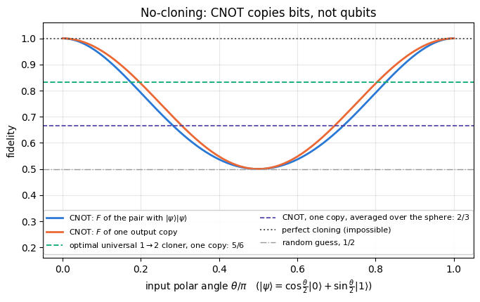
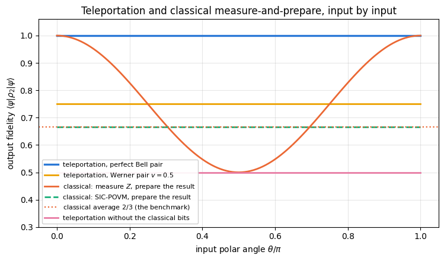
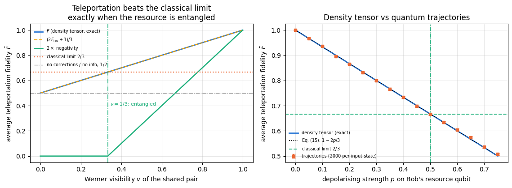
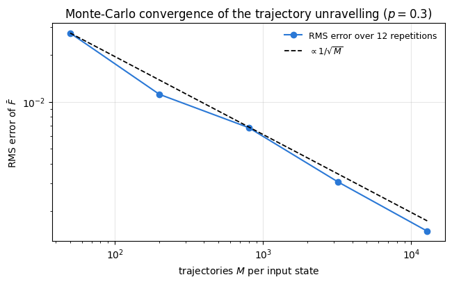

Quantum Many-Body Simulation — Chapter 8 — Quantum information protocols
1. Introduction and motivation
You hold a qubit in an unknown state \(\vert\psi\rangle=\alpha\vert0\rangle+\beta\vert1\rangle\) and want a colleague far away to hold a qubit in that state. Sending the qubit itself is often impossible: it may be an atom in a trap, or the channel may destroy photon polarisation. Phoning is possible, but no classical message alone does the job. Measuring the qubit and phoning the result fails because one measurement yields one bit and destroys the state, whereas \(\vert\psi\rangle\) is specified by two real numbers, which could only be estimated from many copies. Making those copies is forbidden by the no-cloning theorem (Section 3). The best measure-and-phone strategy reaches an average fidelity of \(2/3\) (Section 8); the fidelity \(\vert\langle\psi\vert\phi\rangle\vert^2\) is the probability that the delivered state \(\vert\phi\rangle\) passes the test “are you \(\vert\psi\rangle\)?” (06, Section 5).
In 1993 Bennett, Brassard, Crépeau, Jozsa, Peres and Wootters found the way out. Alice and Bob share, before the protocol starts, one Bell pair of notebook 19, the unit of entanglement called one ebit. Alice performs a Bell measurement, a joint measurement of her unknown qubit and her half of the pair in the basis of the four Bell states, and phones Bob the two classical bits that name the outcome. Bob then recovers the state exactly by applying one of four fixed single-qubit Pauli gates. One ebit plus two classical bits thus replace one transmitted qubit. The state is destroyed at Alice’s end (as no-cloning demands) and reappears at Bob’s, and nothing travels faster than light, because Bob’s qubit is useless until the two bits arrive. The protocol was demonstrated with photons in 1997 and has since been run over distances up to 1400 km, from the ground to a satellite.
Teleportation is the primitive behind quantum repeaters, which distribute entanglement over long distances (notebook 21), measurement-based quantum computing, where every gate is a teleportation, and fault-tolerant gate implementations (magic-state injection, Exercise 8). The fidelity a noisy pair supports, Eq. (13) below, is a standard figure of merit for quantum-network hardware.
What we will do.
No-cloning, with two independent proofs and a numerical demonstration that the natural “copy” circuit (a CNOT) copies classical bits and destroys quantum superpositions (Section 3).
The protocol, derived by rewriting \(\vert\psi\rangle_0\otimes\vert\Phi^+\rangle_{12}\) in the Bell basis of qubits 0 and 1 — four lines of algebra that contain the whole idea (Section 4).
The implementation, with a real mid-circuit measurement whose result selects Bob’s gate (classical feed-forward), written so that it stays inside jit and vmap: no Python if on a measurement result, only jnp.where (Sections 5–6).
Why nothing is transmitted faster than light: the four outcomes occur with probability \(1/4\)whatever the input, and Bob’s qubit before the correction is the maximally mixed state \(\mathbb 1/2\), a fair coin. Without the classical bits the fidelity is exactly \(1/2\) (Section 7).
The classical benchmark \(2/3\), derived by averaging the fidelity over all input states with the identity \(\int d\psi\,(\vert\psi\rangle\langle\psi\vert)^{\otimes2}=P_{\rm sym}/3\), with \(P_{\rm sym}\) the projector onto symmetric two-copy states (Section 8); the same identity gives the noisy-teleportation formula in Section 10.
Noisy resources. A Bell pair mixed with white noise (a Werner state, notebook 19) with overlap \(F_{\rm res}\) with the ideal pair gives average fidelity \(\bar F=(2F_{\rm res}+1)/3\); we verify this on the density tensor and with quantum trajectories (notebook 17), and find that the protocol beats the classical \(2/3\) exactly when the resource is entangled (Sections 10–12).
Deferred measurement: replacing the measurement and the feed-forward by two controlled gates gives literally the same state (Section 13).
What you will learn
Physics
the no-cloning theorem and why linearity alone forbids copying;
the Bell-basis identity that makes teleportation work, and the role of the two classical bits (with only one of them the fidelity drops to the classical \(2/3\));
no-signalling as a concrete computation: a maximally mixed conditional state;
the classical measure-and-prepare limit \(2/3\) and the entanglement threshold it implies for a noisy resource.
Numerical methods
exact averages over all input states using a 2-design (six states replace an integral over the Bloch sphere);
two unravellings of the same noisy protocol — density tensor (\(O(4^N)\) memory, exact) and trajectories (\(O(2^N)\) memory, statistical error \(1/\sqrt{M}\)) — and the measured agreement between them;
estimating a fidelity from samples and its shot noise.
Implementation practice
projective measurement with collapse as apply_gate with a projector plus a renormalisation;
classical feed-forward with jnp.where on a traced outcome, so the whole protocol is one jitted, vmappable function;
vmap over shots, over input states and over trajectories; explicit PRNG key splitting;
building \(\rho_{\rm in}\otimes\rho_{\rm res}\) and partial traces of a rank-\(2N\) density tensor with einsum.
19 — Bell states and CHSH: the Bell basis, the Bell-state circuit, Werner states and the entanglement threshold \(v>1/3\) — all of which reappear here.
Conventions. Qubit 0 = Alice’s unknown input, qubit 1 = Alice’s half of the resource, qubit 2 = Bob’s half. \(\vert0\rangle\) is the \(+1\) eigenstate of \(Z\); qubit \(q\) is tensor axis \(q\); qubit 0 is the most significant bit of the flat index.
Configuration
Every notebook of this course starts with the same cell. Choose where to run (DEVICE) and the floating-point precision (PRECISION): "double" = float64/complex128 (default, recommended for physics), "single" = float32/complex64 (half the memory, faster on consumer GPUs, but watch the round-off). All code below derives its dtypes from RDTYPE/CDTYPE and its check tolerances from TOL, so nothing else needs to change.
Code
# ==============================================================================# CONFIGURATION -- adapt to your hardware, then run the notebook top to bottom# ==============================================================================DEVICE ="auto"# "auto": use a GPU if JAX finds one, else CPU | "cpu" | "gpu"PRECISION ="double"# "double": float64/complex128 | "single": float32/complex64import osif DEVICE =="cpu": os.environ["JAX_PLATFORMS"] ="cpu"# must be set BEFORE jax is importedimport stringfrom functools import partialimport mathimport numpy as npimport jaximport jax.numpy as jnpfrom jax import lax# Precision is configurable: "double" = float64/complex128 (default; needed for long time evolutions and# tight validation), "single" = float32/complex64 (half the memory, faster on consumer GPUs).# In a notebook PRECISION is defined in the Configuration cell; for this module use the env var QE_PRECISION.PRECISION =globals().get("PRECISION", os.environ.get("QE_PRECISION", "double"))jax.config.update("jax_enable_x64", PRECISION =="double")RDTYPE = jnp.float64 if PRECISION =="double"else jnp.float32 # real dtypeCDTYPE = jnp.complex128 if PRECISION =="double"else jnp.complex64 # complex dtype of all states/operatorsTOL =1e-10if PRECISION =="double"else1e-4# tolerance for sanity checks (asserts)_LETTERS = string.ascii_letters # the 52 einsum index labels a-z, A-Zimport timeimport matplotlib.pyplot as pltif DEVICE =="gpu"and jax.default_backend() =="cpu":print("WARNING: DEVICE='gpu' requested but JAX found no GPU -- running on CPU.")print(f"JAX {jax.__version__} | backend: {jax.default_backend()} | devices: {jax.devices()}")print(f"precision: {PRECISION} -> real {RDTYPE.__name__}, complex {CDTYPE.__name__}, check tolerance TOL={TOL:g}")
JAX 0.11.0 | backend: cpu | devices: [CpuDevice(id=0)]
precision: double -> real float64, complex complex128, check tolerance TOL=1e-10
2. Engine recap and helpers
We reuse the gates, the einsum applicators for state vectors and density tensors, reduced density matrices, the state constructors, the Kraus channels in both their density-matrix and trajectory form, and the fidelity. The measurement with collapse and the whole protocol are written from scratch below.
Engine recap — the simulator primitives used in this notebook (click to expand)
# ==============================================================================# ENGINE RECAP: the functions of quantum_engine.py (SmoQ.jax) used in this notebook.# Each one is derived, with its mathematics and an independent check, in notebook 08b# (Chapter 3), 'Building the quantum simulator engine'.# States are rank-N tensors of shape (2,)*N; every operator acts through ONE einsum.# ==============================================================================# ----------------------------------------------------------------------------# 1. Elementary matrices: Paulis, Clifford generators, rotations# ----------------------------------------------------------------------------I2 = jnp.eye(2, dtype=CDTYPE)X = jnp.array([[0, 1], [1, 0]], dtype=CDTYPE)Y = jnp.array([[0, -1j], [1j, 0]], dtype=CDTYPE)Z = jnp.array([[1, 0], [0, -1]], dtype=CDTYPE)H = jnp.array([[1, 1], [1, -1]], dtype=CDTYPE) / jnp.sqrt(2.0) # Hadamard: Z-basis <-> X-basisP0 = jnp.array([[1, 0], [0, 0]], dtype=CDTYPE) # projector |0><0|P1 = jnp.array([[0, 0], [0, 1]], dtype=CDTYPE) # projector |1><1|CNOT = jnp.array([[1, 0, 0, 0], [0, 1, 0, 0], [0, 0, 0, 1], [0, 0, 1, 0]], dtype=CDTYPE)CZ = jnp.diag(jnp.array([1, 1, 1, -1], dtype=CDTYPE))# ----------------------------------------------------------------------------# 2. THE core primitive: a k-qubit operator acting on a tensor through ONE einsum# ----------------------------------------------------------------------------def apply_gate(psi, U, qubits):"""Apply a k-qubit operator U to the axes `qubits` of the tensor `psi`. MATH ---- One qubit (k=1), target q: psi'[s_0,..,a,..,s_{N-1}] = sum_b U[a,b] psi[s_0,..,b,..,s_{N-1}] Two qubits (k=2), targets (q1,q2); the 4x4 matrix is reshaped to U[a1,a2,b1,b2]: psi'[.., a1, .., a2, ..] = sum_{b1,b2} U[a1,a2,b1,b2] psi[.., b1, .., b2, ..] This IS the action of (1 x .. x U x .. x 1) -- written without ever building it. EINSUM TRANSLATION (generated automatically below) ------------------ N=3, q=1 : "db,abc->adc" d = new (output) index of qubit 1 N=4, q=(1,3) : "efbd,abcd->aecf" e,f = new indices of qubits 1 and 3 Recipe: label the axes of psi with letters a,b,c,...; give every target qubit a NEW letter (the next unused ones); U carries (new letters)+(old letters of the targets); the output is psi's labels with the target letters replaced by the new ones. IMPLEMENTATION NOTES -------------------- * reshape of U: (2^k,2^k) -> (2,)*2k. Row index = (a1..ak), column = (b1..bk), and the FIRST qubit in `qubits` is the most significant bit of the small matrix, i.e. it corresponds to the LEFT factor of kron(A,B). * `qubits` may be any distinct axes in any order: non-neighbouring gates cost the same. * U need not be unitary: projectors, Kraus operators and Hamiltonian terms reuse this. * psi may be ANY tensor with those axes of size 2: a state (rank N), a density tensor (rank 2N: ket axes 0..N-1, bra axes N..2N-1), ... COST O(2^k * 2^N) operations, O(2^N) memory (dense matrix: O(4^N) both). JAX `qubits` must be static Python ints (they define the einsum string); psi and U are traced, so the function can sit inside jit / grad / vmap / scan. """ qubits =tuple(int(q) for q in qubits) k, n =len(qubits), psi.ndim U = jnp.asarray(U, dtype=psi.dtype).reshape((2,) * (2* k)) # matrix -> rank-2k tensor inp =list(_LETTERS[:n]) # labels of psi's axes new = _LETTERS[n:n + k] # fresh labels for the outputs out = inp.copy()for a, q inzip(new, qubits): out[q] = a # target axes get the new labels sub =f"{''.join(new)}{''.join(inp[q] for q in qubits)},{''.join(inp)}->{''.join(out)}"return jnp.einsum(sub, U, psi)def apply_gate_dm(rho, U, qubits):"""Unitary on a density tensor: rho -> U rho U^dagger. MATH rho'[a..;a'..] = sum_{b,b'} U[a,b] rho[b..;b'..] U^*[a',b'] i.e. U acts on the KET axis q and the complex conjugate U^* on the BRA axis N+q. (A density matrix is "a state vector of 2N qubits": vectorisation |rho>> and U (x) U^* acting on it.) IMPLEMENTATION two calls of `apply_gate` -- the same einsum machinery, no new code. COST O(2^k 4^N). """ N = rho.ndim //2 rho = apply_gate(rho, U, qubits) # U on ket axesreturn apply_gate(rho, jnp.conj(jnp.asarray(U)), [N + q for q in qubits]) # U^* on bra axesdef apply_kraus_dm(rho, kraus, qubits):"""Quantum channel in Kraus form: rho -> sum_m K_m rho K_m^dagger, sum_m K_m^dag K_m = 1. EINSUM TRANSLATION (N=2, channel on qubit 0; g = Kraus index, summed!) "gea,gfc,abcd->ebfd" with operands K, K^*, rho [a=ket0, b=ket1, c=bra0, d=bra1; e, f = new ket0, bra0] All Kraus branches are summed INSIDE one einsum -- no Python loop over m. `kraus` has shape (M, 2^k, 2^k). """ qubits =tuple(int(q) for q in qubits) k, N =len(qubits), rho.ndim //2 K = jnp.asarray(kraus, dtype=rho.dtype).reshape((-1,) + (2,) * (2* k)) n = rho.ndim inp =list(_LETTERS[:n]) new_k, new_b, m = _LETTERS[n:n + k], _LETTERS[n + k:n +2* k], _LETTERS[n +2* k] out = inp.copy()for a, b, q inzip(new_k, new_b, qubits): out[q], out[N + q] = a, b ket_old ="".join(inp[q] for q in qubits) bra_old ="".join(inp[N + q] for q in qubits) sub =f"{m}{new_k}{ket_old},{m}{new_b}{bra_old},{''.join(inp)}->{''.join(out)}"return jnp.einsum(sub, K, jnp.conj(K), rho)# ----------------------------------------------------------------------------# 3. State preparation# ----------------------------------------------------------------------------_KETS = {"0": [1, 0], "1": [0, 1], "+": [1, 1], "-": [1, -1], "r": [1, 1j], "l": [1, -1j]}def product_state(spec):"""Product state from a string, one character per qubit: product_state('01+-') = |0>|1>|+>|->. ('r','l' = the +1/-1 eigenstates of Y.) MATH psi[s_0,...,s_{N-1}] = v0[s_0] v1[s_1] ... v_{N-1}[s_{N-1}] EINSUM an outer product = einsum with NO summed index: "a,b,c->abc". A product state needs only 2N numbers; entanglement is what makes all 2^N necessary. """ vecs = [jnp.array(_KETS[c], dtype=CDTYPE) / jnp.linalg.norm(jnp.array(_KETS[c], dtype=CDTYPE))for c in spec] n =len(vecs) sub =",".join(_LETTERS[i] for i inrange(n)) +"->"+ _LETTERS[:n]return jnp.einsum(sub, *vecs)def bell_state(kind="phi+"):"""The four Bell states as (2,2) tensors: phi+- = (|00> +- |11>)/sqrt2, psi+- = (|01> +- |10>)/sqrt2.""" a =1/ np.sqrt(2) v = {"phi+": [a, 0, 0, a], "phi-": [a, 0, 0, -a], "psi+": [0, a, a, 0], "psi-": [0, a, -a, 0]}[kind]return jnp.array(v, dtype=CDTYPE).reshape(2, 2)def haar_state(key, N):"""Haar-random pure state: a complex Gaussian vector, normalised. (The Gaussian measure is unitarily invariant, so the direction is uniformly distributed.) `key` is an explicit JAX PRNG key -- same key, same state: reproducible science.""" k1, k2 = jax.random.split(key) v = jax.random.normal(k1, (2,) * N) +1j* jax.random.normal(k2, (2,) * N)return (v / jnp.linalg.norm(v)).astype(CDTYPE)def to_dm(psi):"""Pure state -> density TENSOR rho[s..; s'..] = psi[s..] psi^*[s'..] (rank 2N). An outer product: einsum "ab,AB->abAB" -- here via the equivalent tensordot(axes=0)."""return jnp.tensordot(psi, jnp.conj(psi), axes=0)def dm_matrix(rho):"""View a rank-2N density tensor as an ordinary 2^N x 2^N matrix (a reshape, no copy of meaning).""" d =int(round(np.sqrt(rho.size)))return rho.reshape(d, d)# ----------------------------------------------------------------------------# 4. Reduced density matrices & observables (matrix-free)# ----------------------------------------------------------------------------def rdm(psi, keep):"""Reduced density matrix of the qubits `keep` from a PURE state: rho_A = Tr_B |psi><psi|. MATH rho_A[a, a'] = sum_{b} psi[a, b] psi^*[a', b] (a: indices of A, b: of the rest B) EINSUM TRANSLATION N=3, keep=(0,): "abc,Abc->aA" with operands psi, psi^* * letters of B (b,c) appear in BOTH operands and not in the output -> summed = traced out * the kept axis gets a different letter in the second operand -> stays open (a and A) The full |psi><psi| (4^N numbers) is never formed; cost O(2^N 2^|A|). Returns a (2^|A|, 2^|A|) matrix with row/column order following `keep`. """ keep =tuple(int(q) for q in keep) n, k = psi.ndim, len(keep) a =list(_LETTERS[:n]) b = a.copy()for new, q inzip(_LETTERS[n:n + k], keep): b[q] = new sub =f"{''.join(a)},{''.join(b)}->{''.join(a[q] for q in keep)}{''.join(b[q] for q in keep)}"return jnp.einsum(sub, psi, jnp.conj(psi)).reshape(2** k, 2** k)def rdm_dm(rho, keep):"""Partial trace of a density TENSOR (rank 2N), keeping the qubits `keep`. MATH rho_A[a,a'] = sum_b rho[a,b ; a',b] EINSUM N=2, keep=(0,): "abAb->aA" -- the letter b is REPEATED inside one operand and absent from the output: that is a trace over that pair of axes. """ keep =tuple(int(q) for q in keep) N = rho.ndim //2 ket =list(_LETTERS[:N]) bra = [(_LETTERS[N + q] if q in keep else ket[q]) for q inrange(N)] sub =f"{''.join(ket)}{''.join(bra)}->{''.join(ket[q] for q in keep)}{''.join(bra[q] for q in keep)}"return jnp.einsum(sub, rho).reshape(2**len(keep), 2**len(keep))# ----------------------------------------------------------------------------# 5. State characteristics: entropies, fidelity, negativity# ----------------------------------------------------------------------------def purity(rho_mat):"""Tr(rho^2): 1 for pure states, 1/d for the maximally mixed state in dimension d."""return jnp.real(jnp.trace(rho_mat @ rho_mat))def _sqrtm_psd(A):"""Square root of a positive semi-definite matrix via eigendecomposition: V sqrt(w) V^dag.""" w, v = jnp.linalg.eigh(A)return (v * jnp.sqrt(jnp.clip(w, 0, None))) @ v.conj().Tdef fidelity_dm(rho, sigma):"""Uhlmann fidelity F(rho,sigma) = (Tr sqrt( sqrt(rho) sigma sqrt(rho) ))^2 for dense matrices.""" s = _sqrtm_psd(rho) w = jnp.linalg.eigvalsh(s @ sigma @ s)return jnp.sum(jnp.sqrt(jnp.clip(w, 0, None))) **2def as_dm_tensor(rho):"""Accept a density matrix in EITHER form and return the rank-2N tensor (2,)*2N. Both conventions are in use: `rdm` and `dm_matrix` return a (2^N, 2^N) MATRIX, while `to_dm` and the channel functions work with the rank-2N TENSOR (N ket axes, then N bra axes). A (2^N, 2^N) matrix with N > 1 is unambiguous, because a density tensor has every axis of length 2. Passing the matrix form straight to `partial_transpose` used to transpose the WHOLE matrix, which leaves the eigenvalues alone and silently reports zero negativity -- hence this conversion. """ rho = jnp.asarray(rho)if rho.ndim ==2and rho.shape[0] >2: # (2^N, 2^N) matrix with N > 1 d = rho.shape[0] N =int(round(math.log2(d)))if2** N != d:raiseValueError(f"density matrix of dimension {d} is not a power of two")return rho.reshape((2,) * (2* N))ifany(s !=2for s in rho.shape) or rho.ndim %2:raiseValueError(f"not a density matrix or density tensor: shape {rho.shape}")return rhodef partial_transpose(rho, qubits):"""Partial transpose on subsystem A = `qubits`, for a density tensor OR a (2^N, 2^N) matrix. In tensor form it is trivial: SWAP the ket axis q with the bra axis N+q for q in A. (With a 2^N x 2^N matrix this requires painful index gymnastics -- here: one `transpose`.) RETURNS the rank-2N tensor; wrap in `dm_matrix` for the matrix form.""" rho = as_dm_tensor(rho) N = rho.ndim //2 perm =list(range(2* N))for q in qubits: perm[q], perm[N + q] = perm[N + q], perm[q]return jnp.transpose(rho, perm)def negativity(rho, qubits):"""Entanglement negativity (Peres-Horodecki / PPT criterion). N(rho) = (||rho^{T_A}||_1 - 1)/2 = sum of |negative eigenvalues| of the partial transpose, E_N = log2 ||rho^{T_A}||_1 = log2(2N+1) (logarithmic negativity). N > 0 => entangled (for 2x2 and 2x3 systems also <=). Returns (N, E_N).""" lam = jnp.linalg.eigvalsh(dm_matrix(partial_transpose(rho, qubits))) neg = jnp.sum(jnp.abs(lam) - lam) /2return neg, jnp.log2(2* neg +1)# ----------------------------------------------------------------------------# 7. Noise channels (Kraus operators): density matrix and quantum-trajectory forms# ----------------------------------------------------------------------------def kraus_depolarizing(p):"""Depolarising channel rho -> (1-p) rho + (p/3)(X rho X + Y rho Y + Z rho Z). Kraus: sqrt(1-p) 1, sqrt(p/3) X, sqrt(p/3) Y, sqrt(p/3) Z. Bloch vector shrinks by 1 - 4p/3."""return jnp.stack([jnp.sqrt(1- p) * I2, jnp.sqrt(p /3) * X, jnp.sqrt(p /3) * Y, jnp.sqrt(p /3) * Z])def kraus_dephasing(p):"""Dephasing (phase-flip) channel rho -> (1-p) rho + p Z rho Z : coherences rho_01 -> (1-2p) rho_01."""return jnp.stack([jnp.sqrt(1- p) * I2, jnp.sqrt(p) * Z])def kraus_amplitude_damping(g):"""Amplitude damping (T1 decay |1> -> |0> with probability g): K0 = [[1,0],[0,sqrt(1-g)]] (no decay -- but the amplitude of |1> shrinks: 'no click' is information) K1 = [[0,sqrt(g)],[0,0]] (decay event = sqrt(g) |0><1| = sqrt(g) sigma^+, engine SP).""" K0 = jnp.array([[1, 0], [0, jnp.sqrt(1- g)]], dtype=CDTYPE) K1 = jnp.array([[0, jnp.sqrt(g)], [0, 0]], dtype=CDTYPE)return jnp.stack([K0, K1])def apply_kraus_mcwf(key, psi, kraus, qubits):"""Apply a channel to a PURE state stochastically (quantum trajectory / Monte-Carlo wave function). MATH choose branch m with probability p_m = ||K_m psi||^2 = Tr(K_m rho_A K_m^dag) then |psi> -> K_m|psi> / sqrt(p_m). Averaging |psi><psi| over many trajectories gives exactly sum_m K_m rho K_m^dag. WHY memory O(2^N) instead of O(4^N): open systems at the price of closed ones (times #trajectories, which are embarrassingly parallel -> jax.vmap over keys). IMPLEMENTATION probabilities come from the SMALL reduced density matrix (einsum "mab,bc,mac->m"); `K[m]` with a traced integer m is a gather, so everything stays jit-compatible. """ K = jnp.asarray(kraus, dtype=CDTYPE) r = rdm(psi, qubits) probs = jnp.real(jnp.einsum("mab,bc,mac->m", K, r, jnp.conj(K))) m = jax.random.categorical(key, jnp.log(jnp.clip(probs, 1e-300, None))) psi = apply_gate(psi, K[m], qubits)return psi / jnp.linalg.norm(psi)
Code
# ==============================================================================# PLOT STYLE + small helpers used throughout this notebook# ==============================================================================PALETTE = ["#2a78d6", "#eb6834", "#1baf7a", "#eda100", "#e87ba4", "#4a3aa7"] # colour-blind-friendly, fixed orderMARKERS = ["o", "s", "^", "D", "v", "P"]plt.rcParams.update({"axes.prop_cycle": plt.cycler(color=PALETTE), "axes.grid": True,"grid.alpha": 0.3, "font.size": 10, "legend.frameon": False})def max_abs(a):"""Largest absolute entry of an array, as a Python float."""returnfloat(jnp.max(jnp.abs(jnp.asarray(a))))def qubit_state(theta, phi=0.0):"""One qubit on the Bloch sphere: |psi> = cos(theta/2)|0> + e^{i phi} sin(theta/2)|1>. theta = polar angle from the north pole (|0>), phi = azimuth. theta, phi may be traced."""return jnp.array([jnp.cos(theta /2) +0j, jnp.exp(1j* phi) * jnp.sin(theta /2)], dtype=CDTYPE)def fid_state_dm(ket, rho_mat):"""Fidelity of a MIXED state with a PURE target: F = <psi| rho |psi> (a linear functional of rho)."""return jnp.real(jnp.vdot(ket, rho_mat @ ket))# The test inputs used throughout: name -> (theta, phi)TEST_INPUTS = {"|0>": (0.0, 0.0), "|1>": (np.pi, 0.0), "|+>": (np.pi /2, 0.0),"Ry(pi/4)|0>": (np.pi /4, 0.0), "Ry(3pi/4)|0>": (3* np.pi /4, 0.0),"generic (th=pi/3, ph=0.7)": (np.pi /3, 0.7)}
3. The no-cloning theorem
3.1 Statement
Theorem (Wootters and Zurek 1982; Dieks 1982). There is no unitary \(U\) acting on two qubits and no fixed “blank” state \(\vert b\rangle\) such that
\[U\left(\vert\psi\rangle\otimes\vert b\rangle\right)=\vert\psi\rangle\otimes\vert\psi\rangle\qquad\text{for every }\vert\psi\rangle .\]
3.2 Proof 1: linearity
Suppose such a \(U\) existed. Apply it to the two basis states:
Comparing coefficients term by term gives \(\alpha^2=\alpha\), \(\beta^2=\beta\) and \(\alpha\beta=0\), so \(\{\alpha,\beta\}=\{1,0\}\): the two sides agree only for the basis states themselves. The obstruction is linearity: the argument never used unitarity, so it rules out every linear machine, unitary or not.
3.3 Proof 2: inner products
A second argument, which also tells us which states can be copied. Unitaries preserve inner products. If \(U\) clones both \(\vert\psi\rangle\) and \(\vert\varphi\rangle\) then
Writing \(x=\langle\psi\vert\varphi\rangle\) we need \(x=x^2\), hence \(x=0\) or \(x=1\): a cloning machine can copy a set of states only if they are mutually orthogonal (classical information) or identical. \(\square\)
Neither proof is weakened by giving the machine a work space. A cloner with an ancilla would act as \(U\left(\vert\psi\rangle\vert b\rangle\vert A\rangle\right)=\vert\psi\rangle\vert\psi\rangle\vert A_\psi\rangle\), and the same manipulation gives \(x=x^2\langle A_\psi\vert A_\varphi\rangle\), hence \(\vert x\vert\le\vert x\vert^2\), hence \(x=0\) or \(\vert x\vert=1\) — the same conclusion. Extra degrees of freedom do not help.
3.4 What the “copy” circuit actually does
The natural candidate for a copier is CNOT: it maps \(\vert0\rangle\vert0\rangle\to\vert00\rangle\) and \(\vert1\rangle\vert0\rangle\to\vert11\rangle\), so it does copy classical bits. On a superposition it produces, as the proof says, \(\alpha\vert00\rangle+\beta\vert11\rangle\), an entangled state that differs from \(\vert\psi\rangle\vert\psi\rangle\). With \(\alpha=\cos\frac\theta2\), \(\beta=\sin\frac\theta2\) the overlap with the desired \(\vert\psi\rangle\vert\psi\rangle\) is \(\alpha^3+\beta^3\), so the joint fidelity is
while each individual output qubit is left in the mixed state \(\mathrm{diag}(\alpha^2,\beta^2)\), whose fidelity with \(\vert\psi\rangle\) is \(\alpha^4+\beta^4\). Both equal 1 at \(\theta=0,\pi\) (classical inputs) and drop to \(1/2\) at \(\theta=\pi/2\) (the equator), where the “copy” is worthless. Averaged over the Bloch sphere the single-copy fidelity is \(\langle\alpha^4+\beta^4\rangle=\langle1-\tfrac12\sin^2\theta\rangle=2/3\) (Section 8 derives \(\langle\sin^2\theta\rangle=2/3\)); the code below computes that average from the curve.
For comparison, the optimal approximate universal \(1\to2\) cloner — the machine constructed by Bužek and Hillery (1996) and proved optimal shortly afterwards (Gisin and Massar 1997; Bruß et al. 1998) — delivers a single-copy fidelity of exactly \(5/6\approx0.833\) for every input. It is worse than CNOT near the poles and much better at the equator, and its average \(5/6\) beats CNOT’s \(2/3\); it is still strictly below 1, as it must be.
Code
# ==============================================================================# STEP 1: the no-cloning theorem, illustrated with the CNOT "copier"# ==============================================================================def cnot_copier(ket):"""Try to copy `ket` onto a blank |0>: |psi>|0> -> CNOT |psi>|0>. Returns the 2-qubit output tensor.""" psi = jnp.einsum("a,b->ab", ket, jnp.array([1.0, 0.0], dtype=CDTYPE))return apply_gate(psi, CNOT, [0, 1])theta_grid = np.linspace(0.0, np.pi, 181)F_joint, F_single = [], []for th in theta_grid: ket = qubit_state(float(th)) out = cnot_copier(ket) target = jnp.einsum("a,b->ab", ket, ket) # the state a perfect cloner would produce F_joint.append(float(jnp.abs(jnp.vdot(target, out)) **2)) F_single.append(float(fid_state_dm(ket, rdm(out, [0])))) # fidelity of ONE output copyF_joint, F_single = np.array(F_joint), np.array(F_single)# Bloch-sphere (Haar) average of a function of theta alone: <f> = (1/2) int_0^pi f(theta) sin(theta) dtheta.# Trapezoidal rule on the 181-point grid; the weight sin(theta) is the solid-angle measure._w = np.sin(theta_grid)_dth = np.diff(theta_grid)def bloch_average(f):"""Average of f(theta) over the Bloch sphere, by trapezoidal integration of f sin(theta)/2.""" g = np.asarray(f) * _wreturnfloat(0.5* np.sum(0.5* (g[:-1] + g[1:]) * _dth))print(f"{'input':28s}{'F(joint, 2 copies)':>19s}{'F(one copy)':>12s}{'purity of one copy':>19s}")for name, (th, ph) in TEST_INPUTS.items(): ket = qubit_state(th, ph) out = cnot_copier(ket) r0 = rdm(out, [0]) tgt = jnp.einsum("a,b->ab", ket, ket)print(f"{name:28s}{float(jnp.abs(jnp.vdot(tgt, out)) **2):19.6f} "f"{float(fid_state_dm(ket, r0)):12.6f}{float(purity(r0)):19.6f}")# --- CHECKPOINT: the inner-product identity of Proof 2, verified on the CNOT map -----------------------kets = [qubit_state(th, ph) for th, ph in TEST_INPUTS.values()]print("\nCHECKPOINT <psi|phi> vs <output_psi|output_phi> for the CNOT map ""(a cloner would square the overlap):")print(f"{'pair':>9s}{'<psi|phi>':>11s}{'<out|out>':>11s}{'<psi|phi>^2':>12s}")for i, j in [(0, 2), (2, 3), (3, 5)]: ov =complex(jnp.vdot(kets[i], kets[j])) ov_out =complex(jnp.vdot(cnot_copier(kets[i]).reshape(-1), cnot_copier(kets[j]).reshape(-1)))print(f"{i}<->{j:<5d}{abs(ov):11.6f}{abs(ov_out):11.6f}{abs(ov) **2:12.6f}")assertabs(abs(ov_out) -abs(ov)) <1e3* TOL # unitary: overlaps are PRESERVED, not squaredprint(f"\nBloch-sphere average of the CNOT single-copy fidelity = {bloch_average(F_single):.5f} "f"(exact value 2/3 = {2/3:.5f}; the optimal universal cloner gives 5/6 = {5/6:.5f} for every input)")assertabs(bloch_average(F_single) -2/3) <1e-4# trapezoidal quadrature error on a 181-point grid
input F(joint, 2 copies) F(one copy) purity of one copy
|0> 1.000000 1.000000 1.000000
|1> 1.000000 1.000000 1.000000
|+> 0.500000 0.500000 0.500000
Ry(pi/4)|0> 0.713388 0.750000 0.750000
Ry(3pi/4)|0> 0.713388 0.750000 0.750000
generic (th=pi/3, ph=0.7) 0.561695 0.625000 0.625000
CHECKPOINT <psi|phi> vs <output_psi|output_phi> for the CNOT map (a cloner would square the overlap):
pair <psi|phi> <out|out> <psi|phi>^2
0<->2 0.707107 0.707107 0.500000
2<->3 0.923880 0.923880 0.853553
3<->5 0.954443 0.954443 0.910961
Bloch-sphere average of the CNOT single-copy fidelity = 0.66664 (exact value 2/3 = 0.66667; the optimal universal cloner gives 5/6 = 0.83333 for every input)
Code
# ==============================================================================# FIGURE: what the CNOT "copier" really does# ==============================================================================fig, ax = plt.subplots(figsize=(7.2, 4.4))ax.plot(theta_grid / np.pi, F_joint, "-", color=PALETTE[0], lw=2, label=r"CNOT: $F$ of the pair with $|\psi\rangle|\psi\rangle$")ax.plot(theta_grid / np.pi, F_single, "-", color=PALETTE[1], lw=2, label=r"CNOT: $F$ of one output copy")ax.axhline(5/6, color=PALETTE[2], ls="--", lw=1.4, label=r"optimal universal $1\to2$ cloner, one copy: $5/6$")ax.axhline(2/3, color=PALETTE[5], ls="--", lw=1.2, label=r"CNOT, one copy, averaged over the sphere: $2/3$")ax.axhline(1.0, color="0.3", ls=":", lw=1.4, label="perfect cloning (impossible)")ax.axhline(0.5, color="0.6", ls="-.", lw=1.0, label="random guess, $1/2$")ax.set_xlabel(r"input polar angle $\theta/\pi$ ($|\psi\rangle=\cos\frac{\theta}{2}|0\rangle+\sin\frac{\theta}{2}|1\rangle$)")ax.set_ylabel("fidelity")ax.set_ylim(0.16, 1.06)ax.set_title("No-cloning: CNOT copies bits, not qubits")ax.legend(fontsize=8, loc="lower center", ncol=2, frameon=True, framealpha=0.92)fig.tight_layout()plt.show()

At the poles \(\theta=0,\pi\) the input is a classical bit and the CNOT copies it perfectly — both fidelities are 1 and the output copy is pure. Everywhere else the fidelity falls, reaching \(1/2\) at the equator (\(\vert+\rangle\)), where the “copy” carries no more information about \(\vert\psi\rangle\) than a coin toss and the output qubit has purity \(1/2\): it is maximally mixed. Averaged over the sphere the single-copy fidelity is \(0.66664\) — the value \(2/3\), up to the \(3\cdot10^{-5}\) error of the trapezoidal rule on the \(181\)-point \(\theta\) grid. The checkpoint shows why the CNOT cannot do better: being unitary it preserves overlaps, whereas cloning would have to square them. The upper dashed line marks the best any machine can do for all inputs at once.
Qubits 1 and 2: a shared Bell pair \(\vert\Phi^+\rangle_{12}=\tfrac{1}{\sqrt2}(\vert00\rangle+\vert11\rangle)\), qubit 1 with Alice, qubit 2 with Bob. Distributing this pair is the only thing that must happen “before”; it does not depend on \(\vert\psi\rangle\).
Alice will measure qubits 0 and 1 jointly, in the Bell basis. So express the first two kets of every term in that basis. Inverting the definitions of the Bell states (Section 3 of the CHSH notebook):
Read off what sits on qubit 2 in each term, using \(Z\vert\psi\rangle=\alpha\vert0\rangle-\beta\vert1\rangle\), \(X\vert\psi\rangle=\alpha\vert1\rangle+\beta\vert0\rangle\) and \(XZ\vert\psi\rangle=\alpha\vert1\rangle-\beta\vert0\rangle\):
Alice’s Bell outcome
bits \((m_1,m_2)\)
Bob’s qubit is
Bob must apply
\(\vert\Phi^+\rangle\)
\((0,0)\)
\(\vert\psi\rangle\)
nothing
\(\vert\Phi^-\rangle\)
\((1,0)\)
\(Z\vert\psi\rangle\)
\(Z\)
\(\vert\Psi^+\rangle\)
\((0,1)\)
\(X\vert\psi\rangle\)
\(X\)
\(\vert\Psi^-\rangle\)
\((1,1)\)
\(XZ\vert\psi\rangle\)
\(X\) first, then \(Z\)
Compactly, with \(m_1,m_2\in\{0,1\}\) labelling the Bell states as in the second column (\(B_{00}=\Phi^+\), \(B_{01}=\Psi^+\), \(B_{10}=\Phi^-\), \(B_{11}=\Psi^-\) — the labelling the circuit below produces),
Three observations, and they are the whole protocol.
Equation (3) is an identity that holds before anything happens; nothing has moved yet.
Every term has the same prefactor \(1/2\), so each Bell outcome has probability \(\vert1/2\vert^2=1/4\), independently of \(\alpha\) and \(\beta\). Alice’s measurement record contains no information about \(\vert\psi\rangle\) — which is exactly why it can be broadcast publicly, and why no signal is sent (Section 7).
Conditioned on outcome \((m_1,m_2)\), Bob’s qubit is in the pure state \(X^{m_2}Z^{m_1}\vert\psi\rangle\). Since \(X^2=Z^2=\mathbb 1\), applying first \(X^{m_2}\) and then \(Z^{m_1}\) undoes it: \(Z^{m_1}X^{m_2}\,X^{m_2}Z^{m_1}\vert\psi\rangle=\vert\psi\rangle\). Two classical bits select one of four fixed gates. The opposite order costs only a sign, \(X^{m_2}Z^{m_1}=(-1)^{m_1m_2}Z^{m_1}X^{m_2}\); in this protocol that sign is a global phase of Bob’s state in a branch that has already been singled out by the measurement, so it is unobservable. In the coherent version of Section 13 the four branches are still superposed and the sign becomes a relative phase on Alice’s qubits, so we keep the order fixed.
4.3 The circuit
Alice cannot “measure in the Bell basis” directly; her detectors read the computational basis. But Section 3 of the CHSH notebook showed that \(H_0\) followed by \(\text{CNOT}_{0\to1}\) maps the computational basis onto the Bell basis. The inverse of that circuit is the same two gates in the opposite order, \(\text{CNOT}_{0\to1}\) first and \(H_0\) second (both gates are self-inverse, so \(\left(\text{CNOT}_{0\to1}H_0\right)^{-1}=H_0\,\text{CNOT}_{0\to1}\)), and it maps the Bell basis onto the computational basis:
with \(m_1\) the result on qubit 0 and \(m_2\) the result on qubit 1. The double lines are classical wires: the two bits must be physically transmitted, at or below the speed of light, before Bob can finish. That is the whole reason teleportation does not violate relativity.
5. From formula to code: measurement with collapse
Before the protocol we need one new primitive: a projective measurement of one qubit with collapse, written so that it survives jit and vmap. The recipe from 08 — measurements is
where \(\Pi_0=\vert0\rangle\langle0\vert\), \(\Pi_1=\vert1\rangle\langle1\vert\). Two implementation points matter:
the probability comes from the one-qubit reduced density matrix — one einsum over the state vector (\(O(2^N)\) work), with no \(2^N\times2^N\) projector and no \(2^N\)-long probability vector;
the outcome is a traced random number, so we may not write if m == 1: .... Instead jnp.where(m == 0, P0, P1) selects the projector and jnp.where(m == 1, X, I2) selects the correction. Both are ordinary array operations, so the whole protocol compiles into one XLA program and vmap turns it into thousands of independent runs in a single compiled call.
JAX practice. This is the general pattern for mid-circuit measurement and classical feed-forward: replace control flow by data flow. A Python if would force the value of a traced array and raise ConcretizationTypeError; jnp.where evaluates both branches (cheap here: two \(2\times2\) matrices) and picks one. For expensive branches use lax.cond instead, which really does execute only one side — but lax.cond under vmap converts itself back into a where, so for small gates where is both simpler and faster.
Code
# ==============================================================================# STEP 2: projective measurement with collapse, and the teleportation circuit# ==============================================================================def measure_z(key, psi, q):"""Measure qubit `q` in the Z basis. Returns (outcome m in {0,1}, collapsed and renormalised state). MATH p(0) = [rho_q]_{00} (Born rule from the 1-qubit reduced density matrix); collapse |psi> -> Pi_m |psi> / sqrt(p(m)). JAX `m` is a traced integer -> the projector is selected with `jnp.where`, never a Python `if`, so this function is jit- and vmap-compatible (vmap over keys = many independent runs). """ p0 = jnp.real(rdm(psi, [q])[0, 0]) m = (jax.random.uniform(key) >= p0).astype(jnp.int32) # 0 with probability p0 psi = apply_gate(psi, jnp.where(m ==0, P0, P1), [q])return m, psi / jnp.linalg.norm(psi)def three_qubit_input(ket, resource=None):"""|psi>_0 (x) |Phi+>_{12} as a rank-3 tensor. EINSUM: "a,bc->abc" -- an outer product, nothing summed.""" res = bell_state("phi+") if resource isNoneelse resourcereturn jnp.einsum("a,bc->abc", ket, res)def alice_bell_measurement_gates(psi):"""Rotate the Bell basis of qubits (0,1) onto the computational basis: H_0 . CNOT_{0->1}.""" psi = apply_gate(psi, CNOT, [0, 1])return apply_gate(psi, H, [0])@jax.jitdef teleport(key, ket, apply_corr=1):"""ONE run of the teleportation protocol on a pure input `ket`. Returns (m1, m2, psi_final). `apply_corr` is 1 (normal protocol) or 0 (Bob does nothing) -- it is a traced integer, so both variants share one compiled program. STEPS 1. |psi>_0 (x) |Phi+>_{12} 2. Alice: CNOT(0->1), H(0) [rotate her Bell basis onto the computational basis] 3. Alice: measure qubits 0 and 1 [mid-circuit measurement, with collapse] 4. Bob: X^{m2} then Z^{m1} on qubit 2 [classical feed-forward via jnp.where] """ psi = three_qubit_input(ket) psi = alice_bell_measurement_gates(psi) k1, k2 = jax.random.split(key) m1, psi = measure_z(k1, psi, 0) m2, psi = measure_z(k2, psi, 1) c1, c2 = m1 * apply_corr, m2 * apply_corr psi = apply_gate(psi, jnp.where(c2 ==1, X, I2), [2]) # X correction first ... psi = apply_gate(psi, jnp.where(c1 ==1, Z, I2), [2]) # ... then Zreturn m1, m2, psi# --- gate-by-gate walk for the input |+> ----------------------------------------------------------------print("GATE-BY-GATE TELEPORTATION OF |+>\n")ket_plus = qubit_state(np.pi /2)psi = three_qubit_input(ket_plus)print(f" step 1 |psi>_0 (x) |Phi+>_12 : amplitudes = {np.round(np.asarray(psi).reshape(-1), 4)}")print(f" <Z_1 Z_2> of the resource = {float(jnp.real(jnp.vdot(psi, apply_gate(apply_gate(psi, Z, [1]), Z, [2])))):+.4f}"f" (perfectly correlated)")psi = apply_gate(psi, CNOT, [0, 1])print(f" step 2a CNOT(0 -> 1) : amplitudes = {np.round(np.asarray(psi).reshape(-1), 4)}")psi = apply_gate(psi, H, [0])print(f" step 2b H(0) : amplitudes = {np.round(np.asarray(psi).reshape(-1), 4)}")print(" (all eight amplitudes have modulus 1/(2 sqrt(2)): every outcome (m1,m2) has probability 1/4)")print(f" Bob's state before the measurement, rho_2 =\n{np.round(np.asarray(rdm(psi, [2])), 4)}")print(" -> exactly the maximally mixed state: no information has reached Bob yet.")m1, m2, psi_out = teleport(jax.random.PRNGKey(0), ket_plus)print(f"\n step 3 measured (m1, m2) = ({int(m1)}, {int(m2)})")print(f" step 4 Bob applies X^{int(m2)} then Z^{int(m1)}")print(f" Bob's final state rho_2 =\n{np.round(np.asarray(rdm(psi_out, [2])), 4)}")print(f" fidelity with the input |+> : {float(fid_state_dm(ket_plus, rdm(psi_out, [2]))):.12f}")
GATE-BY-GATE TELEPORTATION OF |+>
step 1 |psi>_0 (x) |Phi+>_12 : amplitudes = [0.5+0.j 0. +0.j 0. +0.j 0.5+0.j 0.5+0.j 0. +0.j 0. +0.j 0.5+0.j]
<Z_1 Z_2> of the resource = +1.0000 (perfectly correlated)
step 2a CNOT(0 -> 1) : amplitudes = [0.5+0.j 0. +0.j 0. +0.j 0.5+0.j 0. +0.j 0.5+0.j 0.5+0.j 0. +0.j]
step 2b H(0) : amplitudes = [ 0.3536+0.j 0.3536+0.j 0.3536+0.j 0.3536+0.j 0.3536+0.j -0.3536+0.j
-0.3536+0.j 0.3536+0.j]
(all eight amplitudes have modulus 1/(2 sqrt(2)): every outcome (m1,m2) has probability 1/4)
Bob's state before the measurement, rho_2 =
[[0.5+0.j 0. +0.j]
[0. +0.j 0.5+0.j]]
-> exactly the maximally mixed state: no information has reached Bob yet.
step 3 measured (m1, m2) = (1, 0)
step 4 Bob applies X^0 then Z^1
Bob's final state rho_2 =
[[0.5+0.j 0.5+0.j]
[0.5+0.j 0.5+0.j]]
fidelity with the input |+> : 1.000000000000
The printed amplitudes after step 2b all have the same modulus, which is Eq. (3) in numbers: the four Alice outcomes are equiprobable. Bob’s reduced density matrix before the measurement is exactly \(\mathbb 1/2\) — he holds no information at all — and after the two classical bits arrive and the correction is applied, his qubit is \(\vert+\rangle\) with fidelity 1 to machine precision. The state has moved from qubit 0 to qubit 2; and qubit 0 has been destroyed by the measurement, as no-cloning requires.
6. Fidelity over many runs and several input states
A single run tests only one of the four measurement branches. The measurement is random, so we check all four branches, for several inputs. We vmap the whole protocol over PRNG keys — one key per run, exactly as one experiment per key — and collect the fidelity and the outcome.
Code
# ==============================================================================# STEP 3: teleportation fidelity for a zoo of inputs (vmap over shots)# ==============================================================================# PARAMETERS ---------------------------------------------------------------------------------------N_SHOTS =2000# independent runs of the protocol per input state# --------------------------------------------------------------------------------------------------@partial(jax.jit, static_argnums=(2,))def teleport_batch(key, ket, shots, apply_corr=1):"""`shots` independent runs: vmap of `teleport` over keys. Returns (fidelities, m1, m2).""" keys = jax.random.split(key, shots)def one(k): m1, m2, psi = teleport(k, ket, apply_corr)return fid_state_dm(ket, rdm(psi, [2])), m1, m2return jax.vmap(one)(keys)print(f"{N_SHOTS} runs per input state\n")print(f"{'input':28s} | {'F (with corrections)':>21s} | {'F (no corrections)':>19s} | "f"{'p(00) p(01) p(10) p(11)':>26s}")for i, (name, (th, ph)) inenumerate(TEST_INPUTS.items()): ket = qubit_state(th, ph) F_c, m1, m2 = teleport_batch(jax.random.PRNGKey(10+ i), ket, N_SHOTS, 1) F_n, _, _ = teleport_batch(jax.random.PRNGKey(10+ i), ket, N_SHOTS, 0) counts = np.array([float(jnp.mean((m1 == a) & (m2 == b))) for a in (0, 1) for b in (0, 1)])print(f"{name:28s} | {float(jnp.mean(F_c)):11.10f} +-{float(jnp.std(F_c)):7.1e} | "f"{float(jnp.mean(F_n)):19.6f} | "+" ".join(f"{c:5.3f}"for c in counts))assertfloat(jnp.min(F_c)) >1-1e3* TOL # EVERY run must be perfect, not just the average# wrong control: the same test applied to the protocol WITHOUT feed-forward must failassertfloat(jnp.min(F_n)) <1-1e3* TOL andabs(float(jnp.mean(F_n)) -0.5) <0.05print("\nCHECKPOINT every single run reached fidelity 1 (to machine precision) for every input state.")print(" Control: without the corrections the same per-run test fails for every input (mean F close to 1/2).")
2000 runs per input state
input | F (with corrections) | F (no corrections) | p(00) p(01) p(10) p(11)
|0> | 1.0000000000 +-0.0e+00 | 0.500500 | 0.243 0.242 0.258 0.258
|1> | 1.0000000000 +-0.0e+00 | 0.490000 | 0.258 0.252 0.233 0.259
|+> | 1.0000000000 +-0.0e+00 | 0.495500 | 0.251 0.245 0.250 0.255
Ry(pi/4)|0> | 1.0000000000 +-0.0e+00 | 0.493750 | 0.247 0.244 0.251 0.259
Ry(3pi/4)|0> | 1.0000000000 +-0.0e+00 | 0.494750 | 0.250 0.236 0.254 0.261
generic (th=pi/3, ph=0.7) | 1.0000000000 +-0.0e+00 | 0.493701 | 0.238 0.264 0.246 0.252
CHECKPOINT every single run reached fidelity 1 (to machine precision) for every input state.
Control: without the corrections the same per-run test fails for every input (mean F close to 1/2).
The fidelity with corrections is exactly \(1\) in every single run, in each of the four branches, for every input including the complex-amplitude one. Without the corrections it falls to \(1/2\) for every input (Section 7 proves that this number is exact and universal), and the per-run test then fails, which shows that the checkpoint can detect a missing feed-forward. The four outcomes occur with frequencies compatible with \(1/4\) each.
7. No information, no signal: the outcome statistics
7.1 Uniform outcomes
Equation (3) already proved that \(p(m_1,m_2)=1/4\) regardless of \(\alpha,\beta\). Two consequences follow. First, Alice’s record is useless on its own: if the outcome distribution depended on the input, the two bits she broadcasts publicly would leak information about \(\vert\psi\rangle\) to anyone listening, without the quantum channel being used at all. Second — and this is the no-signalling statement — the four equal weights are exactly what makes the sum over branches collapse to the maximally mixed state on Bob’s side, as we now compute.
7.2 Bob’s state before the correction, and the Pauli twirl
Trace out Alice’s two qubits from Eq. (3). The Bell states are orthonormal, so the cross terms vanish and
where we used \(XZ=-iY\) (the phase cancels between \(P\) and \(P^\dagger\)). The right-hand side is the Pauli twirl, and it always gives the maximally mixed state. Proof. Write \(\rho=\tfrac12(\mathbb 1+\vec r\cdot\vec\sigma)\). Conjugation by \(X\) leaves \(\sigma_x\) alone and flips \(\sigma_y,\sigma_z\); by \(Y\): flips \(\sigma_x,\sigma_z\); by \(Z\): flips \(\sigma_x,\sigma_y\). So for each \(i\), summing the four terms gives \(1+1-1-1=0\) times \(\sigma_i\), while the identity part is added four times:
Bob’s qubit is maximally mixed until the classical bits arrive, no matter what Alice did, and no matter whether she measured at all. Nothing Alice can do changes any local observable of Bob’s — no signalling, exactly as relativity requires. The entire usefulness of the protocol is carried by the two classical bits.
7.3 Without corrections the fidelity is exactly 1/2
If Bob skips the correction, his state conditioned on \((m_1,m_2)\) is \(X^{m_2}Z^{m_1}\vert\psi\rangle\) and his fidelity averaged over the four equiprobable outcomes is
because a pure qubit state has \(\lVert\vec r\rVert=1\). This is a per-input identity: the value is exactly \(1/2\) for every pure input, and it equals the fidelity of handing Bob a coin-flipped \(\vert0\rangle\) or \(\vert1\rangle\).
Code
# ==============================================================================# STEP 4: outcome statistics, no-signalling, and the fidelity without corrections# ==============================================================================print("Outcome frequencies over", N_SHOTS, "runs (expected 0.25 each), Bob's pre-correction state, ""and the no-correction fidelity:\n")print(f"{'input':28s}{'p(00)':>7s}{'p(01)':>7s}{'p(10)':>7s}{'p(11)':>7s} "f"{'chi2/3':>8s} | {'max|p-1/4| exact':>17s}{'max|rho_2 - 1/2|':>17s} "f"{'F(no corr), exact':>18s}{'F(no corr), sampled':>20s}")CHI2_18_999 =42.31# 99.9 % quantile of the chi-squared distribution with 18 = 6 inputs x 3 degrees of freedomchi2_tot, chi2_bad_tot =0.0, 0.0for i, (name, (th, ph)) inenumerate(TEST_INPUTS.items()): ket = qubit_state(th, ph) F_n, m1, m2 = teleport_batch(jax.random.PRNGKey(500+ i), ket, N_SHOTS, 0) counts = np.array([float(jnp.sum((m1 == a) & (m2 == b))) for a in (0, 1) for b in (0, 1)]) chi2 =float(np.sum((counts - N_SHOTS /4) **2/ (N_SHOTS /4))) chi2_tot += chi2# wrong control: Alice forgets the Hadamard, so she measures in the wrong basis. Sample N_SHOTS outcomes from the# exact Born probabilities of that circuit and apply the SAME uniformity test -- it must fail. p_noH = (np.abs(np.asarray(apply_gate(three_qubit_input(ket), CNOT, [0, 1]))).reshape(4, 2) **2).sum(axis=1) draws = jax.random.choice(jax.random.PRNGKey(900+ i), 4, (N_SHOTS,), p=jnp.asarray(p_noH, dtype=RDTYPE)) counts_bad = np.bincount(np.asarray(draws), minlength=4) chi2_bad_tot +=float(np.sum((counts_bad - N_SHOTS /4) **2/ (N_SHOTS /4)))# Bob's state before any correction, computed EXACTLY (no sampling): trace out Alice's two qubits psi_pre = alice_bell_measurement_gates(three_qubit_input(ket)) dev = max_abs(rdm(psi_pre, [2]) - I2 /2)# the four Born probabilities p(m1,m2), EXACTLY: sum |amplitude|^2 over Bob's index p_exact = np.abs(np.asarray(psi_pre).reshape(4, 2)) **2 dev_p =float(np.max(np.abs(p_exact.sum(axis=1) -0.25)))# exact no-correction fidelity, Eq. (6): average over the four branches of |<psi|P|psi>|^2 F_exact =0.25*sum(float(jnp.abs(jnp.vdot(ket, P @ ket)) **2) for P in (I2, X, Y, Z))print(f"{name:28s} "+" ".join(f"{c / N_SHOTS:7.4f}"for c in counts) +f" {chi2 /3:8.3f} | {dev_p:17.2e}{dev:17.2e}{F_exact:18.6f}{float(jnp.mean(F_n)):20.6f}")assert dev <1e3* TOL and dev_p <1e3* TOL andabs(F_exact -0.5) <1e3* TOLprint("\nCHECKPOINT the four outcome probabilities are exactly 1/4 and Bob's reduced state before the correction")print(" is 1/2 * identity, for every input (no signalling); the exact no-correction fidelity is 1/2")print(" for every input, as Eq. (6) predicts.")print(f" (chi2/3 ~ 1 means the four sampled frequencies are compatible with 1/4 at {N_SHOTS} runs.)")print(f"\nSTATISTICAL CHECKPOINT total chi2 over the six inputs (18 degrees of freedom) = {chi2_tot:.1f}"f" (99.9 % quantile {CHI2_18_999})")print(f" wrong control, Hadamard omitted (Alice measures in the wrong basis): total chi2 = {chi2_bad_tot:.0f}")assert chi2_tot < CHI2_18_999 < chi2_bad_tot
|0> 0.2480 0.2390 0.2570 0.2560 0.560 | 1.11e-16 2.22e-16 0.500000 0.505000
|1> 0.2595 0.2415 0.2450 0.2540 0.543 | 1.11e-16 2.22e-16 0.500000 0.504500
|+> 0.2435 0.2520 0.2435 0.2610 0.559 | 8.33e-17 1.67e-16 0.500000 0.495500
Ry(pi/4)|0> 0.2350 0.2675 0.2620 0.2355 2.361 | 1.39e-16 3.33e-16 0.500000 0.499750
Ry(3pi/4)|0> 0.2615 0.2530 0.2495 0.2360 0.900 | 1.11e-16 2.22e-16 0.500000 0.512750
generic (th=pi/3, ph=0.7) 0.2445 0.2530 0.2430 0.2595 0.476 | 1.11e-16 2.78e-16 0.500000 0.497023
CHECKPOINT the four outcome probabilities are exactly 1/4 and Bob's reduced state before the correction
is 1/2 * identity, for every input (no signalling); the exact no-correction fidelity is 1/2
for every input, as Eq. (6) predicts.
(chi2/3 ~ 1 means the four sampled frequencies are compatible with 1/4 at 2000 runs.)
STATISTICAL CHECKPOINT total chi2 over the six inputs (18 degrees of freedom) = 16.2 (99.9 % quantile 42.31)
wrong control, Hadamard omitted (Alice measures in the wrong basis): total chi2 = 6496
Every entry confirms the algebra. Bob’s pre-correction state is \(\mathbb 1/2\) to machine precision for all six inputs, including the ones with complex amplitudes — so no measurement Bob can perform, on any number of copies, reveals anything before he receives the bits. The exact no-correction fidelity is \(0.5\) for every input, and the sampled value fluctuates around it with the expected shot noise. The reduced chi-squared statistic of the outcome frequencies scatters around 1 (its largest value, about \(2.4\) with three degrees of freedom, has a tail probability of about \(7\%\)), and the total over the six inputs lies well below the \(99.9\%\) quantile of the chi-squared distribution with 18 degrees of freedom. The same test applied to a circuit in which Alice forgets the Hadamard rejects uniformity by a wide margin: for inputs near the poles her outcome then reveals \(\vert\alpha\vert^2\) and \(\vert\beta\vert^2\), which is exactly the information leak that Section 7.1 excludes for the correct circuit.
Physics insight. People sometimes say the state “travels instantaneously” and the classical bits are a bookkeeping detail. Equation (5) says the opposite: before the bits arrive Bob holds literally the maximally mixed state, which is the state of complete ignorance. All four branches are equally likely and each of them is a different state; the bits are what select one. That is why teleportation is limited by the speed of the classical channel.
8. The classical benchmark: averaging over all input states
To say that teleportation is quantum we need something to beat. The natural competitor is the best strategy that uses only a classical channel: Alice measures her qubit somehow and sends the result; Bob prepares a state depending on it. Such a “measure-and-prepare” channel is the most general classical strategy, and we now derive its maximal average fidelity.
8.1 The averaging identity
Since “average fidelity” means an average over all possible inputs, we need
the uniform (Haar) average over the Bloch sphere of two copies of the state. Call it \(\Omega\). Two facts pin it down. First, the measure is invariant under \(\vert\psi\rangle\to U\vert\psi\rangle\), so \(\Omega\) commutes with every \(U\otimes U\). The two-qubit space splits under \(U\otimes U\) into the symmetric (3-dimensional) and antisymmetric (1-dimensional) subspaces, both irreducible, so by Schur’s lemma (an operator that commutes with every \(U\otimes U\) is a multiple of the identity on each irreducible subspace) \(\Omega=c_s P_{\rm sym}+c_a P_{\rm anti}\). Second, each \(\vert\psi\psi\rangle\) is symmetric, so \(c_a=0\), and \(\mathrm{Tr}\,\Omega=1\) forces \(c_s=1/3\):
A quick check: \(A=B=\mathbb 1\) gives \((4+2)/6=1\). Another: \(A=B=Z\) gives \((0+2)/6=1/3\), i.e. \(\langle\cos^2\vartheta\rangle_{\rm sphere}=1/3\), which is correct.
8.2 A 2-design: six states replace the integral
Equation (7) involves only second moments of the state, so any finite set of states reproducing those moments can replace the integral. Such a set is called a 2-design. For one qubit the six eigenstates of \(X\), \(Y\), \(Z\) — \(\vert0\rangle,\vert1\rangle,\vert+\rangle,\vert-\rangle\) and the two \(Y\) eigenstates — form one (they are the vertices of a regular octahedron on the Bloch sphere). Therefore
exactly for any channel \(\Lambda\), because the fidelity is quadratic in \(\vert\psi\rangle\langle\psi\vert\). That turns an integral into a six-term sum, which is what makes every average in this notebook exact instead of sampled. We verify both Eq. (7) and Eq. (9) numerically.
8.3 The bound
A measure-and-prepare channel is \(\Lambda(\rho)=\sum_k\mathrm{Tr}(M_k\rho)\,\sigma_k\) with a POVM \(\{M_k\ge0,\sum_kM_k=\mathbb 1\}\) and arbitrary output states \(\sigma_k\). A POVM (positive operator-valued measure) is the most general measurement: outcome \(k\) occurs with probability \(\mathrm{Tr}(M_k\rho)\), and a projective measurement is the special case in which the \(M_k\) are orthogonal projectors. The SIC-POVM used below is a symmetric informationally complete POVM: four rank-one elements pointing to the corners of a tetrahedron on the Bloch sphere. With Eq. (8),
because \(\sum_k\mathrm{Tr}M_k=\mathrm{Tr}\,\mathbb 1=2\). To bound the last sum, refine the POVM into rank-one elements \(M_k=m_k\vert n_k\rangle\langle n_k\vert\) (any POVM can be refined this way, and refining can only help). Then \(\sum_km_k=\mathrm{Tr}\,\mathbb 1=2\) and \(\mathrm{Tr}(M_k\sigma_k)=m_k\langle n_k\vert\sigma_k\vert n_k\rangle\le m_k\), with equality for \(\sigma_k=\vert n_k\rangle\langle n_k\vert\) — “prepare what you measured”. Hence
The chain of inequalities shows more than the bound. The only step that can be lossy is \(\langle n_k\vert\sigma_k\vert n_k\rangle\le1\), so any rank-one POVM whatsoever attains \(2/3\) exactly, provided the preparation rule is “prepare the state you just measured” — the measurement axis, and even the number of outcomes, are irrelevant, because the input is isotropic. What does matter is the preparation: the same \(Z\) measurement followed by “prepare the opposite eigenstate” gives \(1/3\), and “always prepare \(\vert+\rangle\)” gives \(1/2\). The crudest optimal strategy is therefore: measure \(Z\), prepare \(\vert0\rangle\) or \(\vert1\rangle\), for which \(\bar F=\langle\cos^4\frac\vartheta2+\sin^4\frac\vartheta2\rangle=\langle1-\tfrac12\sin^2\vartheta\rangle =1-\tfrac12\cdot\tfrac23=\tfrac23\). Any teleportation fidelity above \(2/3\) therefore proves that something non-classical was used. (Massar and Popescu 1995 proved the corresponding statement for \(N\) identical copies: \(\bar F=(N+1)/(N+2)\), which is \(2/3\) at \(N=1\) and tends to 1 only as \(N\to\infty\).)
Code
# ==============================================================================# STEP 5: the averaging identity, the 6-state 2-design, and the classical 2/3 bound# ==============================================================================SIX_STATES = [product_state(c) for c in"01+-rl"] # eigenstates of Z, X, Y: a qubit 2-designSWAP4 = jnp.array([[1, 0, 0, 0], [0, 0, 1, 0], [0, 1, 0, 0], [0, 0, 0, 1]], dtype=CDTYPE)P_SYM = (jnp.eye(4, dtype=CDTYPE) + SWAP4) /2def two_copy_average_haar(key, n):"""Monte-Carlo estimate of Omega = <(|psi><psi|)^(x)2> over Haar-random qubit states (vmap over keys)."""def one(k): v = haar_state(k, 1) r = jnp.outer(v, jnp.conj(v))return jnp.kron(r, r)return jnp.mean(jax.vmap(one)(jax.random.split(key, n)), axis=0)Omega_design = jnp.mean(jnp.stack([jnp.kron(jnp.outer(v, jnp.conj(v)), jnp.outer(v, jnp.conj(v)))for v in SIX_STATES]), axis=0)Omega_mc = two_copy_average_haar(jax.random.PRNGKey(3), 40000)print("CHECKPOINT the averaging identity, Eq. (7): Omega = P_sym / 3")print(f" max|Omega(6-state design) - P_sym/3| = {max_abs(Omega_design - P_SYM /3):.2e} (exact: a 2-design)")print(f" max|Omega(40000 Haar samples) - P_sym/3| = {max_abs(Omega_mc - P_SYM /3):.2e} (Monte Carlo: ~1/sqrt(n))")assert max_abs(Omega_design - P_SYM /3) <1e3* TOLdef avg_fidelity_channel(channel):"""Average fidelity of a qubit channel over ALL pure inputs, EXACTLY, via the 6-state 2-design, Eq. (9). `channel` maps a 2x2 density matrix to a 2x2 density matrix."""returnfloat(jnp.mean(jnp.stack([fid_state_dm(v, channel(jnp.outer(v, jnp.conj(v)))) for v in SIX_STATES])))def avg_fidelity_channel_haar(key, channel, n):"""The same average by Monte Carlo over n Haar-random inputs -- to check the 2-design shortcut."""def one(k): v = haar_state(k, 1)return fid_state_dm(v, channel(jnp.outer(v, jnp.conj(v)))) vals = jax.vmap(one)(jax.random.split(key, n))returnfloat(jnp.mean(vals)), float(jnp.std(vals) / np.sqrt(n))# --- the classical strategies -------------------------------------------------------------------------def measure_prepare_z(rho):"""Measure Z, prepare the measured eigenstate: rho -> p0 |0><0| + p1 |1><1| (= dephasing in the Z basis)."""return jnp.diag(jnp.diag(rho))def measure_prepare_axis(n_vec):"""Measure along the unit vector n, prepare the corresponding eigenstate (a rank-one POVM).""" n_vec = jnp.asarray(n_vec, dtype=RDTYPE) / jnp.linalg.norm(jnp.asarray(n_vec, dtype=RDTYPE)) Op = n_vec[0] * X + n_vec[1] * Y + n_vec[2] * Z Pp, Pm = (I2 + Op) /2, (I2 - Op) /2def chan(rho):return jnp.real(jnp.trace(Pp @ rho)) * Pp + jnp.real(jnp.trace(Pm @ rho)) * Pmreturn chandef measure_z_prepare_flipped(rho):"""Measure Z but prepare the OPPOSITE eigenstate -- a rank-one POVM with a bad preparation rule.""" d = jnp.real(jnp.diag(rho))return d[1] * P0 + d[0] * P1def sic_measure_prepare():"""The 4-outcome SIC-POVM (tetrahedron on the Bloch sphere), preparing what was measured. M_k = (1/2)|n_k><n_k| with the four tetrahedral directions: a rank-one POVM that is NOT projective.""" s =1/ np.sqrt(3.0) dirs = [(s, s, s), (s, -s, -s), (-s, s, -s), (-s, -s, s)] projs = [(I2 + n[0] * X + n[1] * Y + n[2] * Z) /2for n in dirs]def chan(rho):returnsum(jnp.real(jnp.trace(P @ rho)) /2* P for P in projs)return chandef prepare_mixed(rho):"""The lazy strategy: ignore the input, always hand Bob the maximally mixed state."""return I2 /2+0.0* rhostrategies = {"measure Z, prepare |0>/|1>": measure_prepare_z,"measure along (1,1,1)/sqrt(3)": measure_prepare_axis([1.0, 1.0, 1.0]),"measure along x": measure_prepare_axis([1.0, 0.0, 0.0]),"SIC-POVM (4 outcomes), prepare it": sic_measure_prepare(),"measure Z, prepare the OPPOSITE": measure_z_prepare_flipped,"ignore input, send 1/2": prepare_mixed,"identity channel (not allowed)": lambda r: r}print(f"\n{'classical strategy':32s}{'F_avg (2-design, exact)':>24s}{'F_avg (Haar MC)':>18s}")zmax =0.0for name, ch in strategies.items(): f_exact = avg_fidelity_channel(ch) f_mc, se = avg_fidelity_channel_haar(jax.random.PRNGKey(11), ch, 20000)print(f"{name:32s}{f_exact:24.6f}{f_mc:12.4f} +-{se:5.4f}")# Eq. (9) checked statistically: Monte Carlo within 4 standard errors of the design value. A zero spread means the# fidelity is the same for every input; then the two numbers must agree to round-off. zmax =max(zmax, abs(f_mc - f_exact) / se if se >1e-9elseabs(f_mc - f_exact) /1e-9)assert zmax <4.0# wrong control: the four eigenstates of X and Z form a 1-design but NOT a 2-design (the Y axis is missing)FOUR_STATES = [product_state(c) for c in"01+-"]f_four =float(jnp.mean(jnp.stack([fid_state_dm(v, measure_prepare_z(jnp.outer(v, jnp.conj(v)))) for v in FOUR_STATES])))f_mc_z, se_z = avg_fidelity_channel_haar(jax.random.PRNGKey(11), measure_prepare_z, 20000)print(f"\nSTATISTICAL CHECKPOINT largest |F(Haar MC) - F(6-state design)| / SE over the strategies = {zmax:.2f}")print(f" wrong control: 4 states (X and Z eigenstates only) give F = {f_four:.6f} for 'measure Z', "f"{abs(f_four - f_mc_z) / se_z:.0f} SE away from the Haar estimate")assertabs(f_four - f_mc_z) / se_z >10.0# every rank-one POVM that prepares what it measured hits 2/3 exactly -- projective or notfor ch in (measure_prepare_z, measure_prepare_axis([1.0, 1.0, 1.0]), measure_prepare_axis([1.0, 0.0, 0.0]), sic_measure_prepare()):assertabs(avg_fidelity_channel(ch) -2/3) <1e3* TOLassert avg_fidelity_channel(measure_z_prepare_flipped) <2/3-0.3# a bad preparation is much worse
measure Z, prepare |0>/|1> 0.666667 0.6672 +-0.0011
measure along (1,1,1)/sqrt(3) 0.666667 0.6668 +-0.0011
measure along x 0.666667 0.6664 +-0.0011
SIC-POVM (4 outcomes), prepare it 0.666667 0.6667 +-0.0000
measure Z, prepare the OPPOSITE 0.333333 0.3328 +-0.0011
ignore input, send 1/2 0.500000 0.5000 +-0.0000
identity channel (not allowed) 1.000000 1.0000 +-0.0000
STATISTICAL CHECKPOINT largest |F(Haar MC) - F(6-state design)| / SE over the strategies = 0.52
wrong control: 4 states (X and Z eigenstates only) give F = 0.750000 for 'measure Z', 78 SE away from the Haar estimate
The six-state average reproduces \(P_{\rm sym}/3\) exactly — it really is a 2-design, so from now on a six-term sum replaces every Haar integral — while \(40\,000\) Monte-Carlo samples only get within \(\sim10^{-3}\), illustrating the \(1/\sqrt n\) price of random sampling. Three projective axes and the four-outcome SIC-POVM all achieve exactly \(2/3\): as Eq. (10) predicts, any rank-one POVM saturates the bound as long as it prepares the state it measured, and the axis is irrelevant because the input is isotropic. The Haar Monte-Carlo column agrees with the six-state value within a few standard errors for every strategy, whereas four states that omit the \(Y\) axis (a 1-design but not a 2-design) give \(0.75\) for “measure \(Z\)” and are rejected by tens of standard errors. The preparation rule is what matters — the same \(Z\) measurement followed by the opposite eigenstate scores \(1/3\). Throwing the input away and sending the maximally mixed state gives \(1/2\). The identity channel gives 1, but it is not a measure-and-prepare strategy: realising it means physically sending the qubit, which is exactly what the classical channel cannot do. The two numbers \(1/2\) and \(2/3\) are the benchmarks against which the next sections measure teleportation.
The Monte-Carlo standard error of the SIC-POVM row is zero: its fidelity is the same for every input. Indeed, with the four tetrahedral directions \(\sum_k\vec n_k\vec n_k^{\,T}=\tfrac43\mathbb 1\), so the SIC strategy shrinks every Bloch vector to \(\vec r/3\) and gives \((1+\tfrac13)/2=2/3\) for every pure input. The “measure \(Z\)” strategy reaches the same average unevenly, with fidelity 1 at the poles and \(1/2\) on the equator. No classical strategy can exceed \(2/3\) for every input, because its smallest fidelity cannot exceed its average. Section 10 compares these strategies with teleportation input by input.
9. Teleportation as a channel
To compare teleportation with a classical strategy we must view it the same way: as a channel\(\Lambda\) mapping Alice’s input state to Bob’s output state, averaged over the measurement outcomes (which is what happens when the protocol is run many times and no post-selection is applied). With a resource \(\rho_{\rm res}\) shared on qubits 1 and 2,
where \(U_A=H_0\,\text{CNOT}_{0\to1}\) and \(\Pi_{m_1m_2}\) projects qubits 0 and 1 onto \(\vert m_1m_2\rangle\). Everything in Eq. (11) is an einsum on the rank-6 density tensor of three qubits (64 complex numbers): apply_gate_dm for the unitaries and the projectors, rdm_dm for the partial trace. The sum over the four outcomes is a Python loop over static indices, which is perfectly fine under jit — only data-dependent branching is forbidden.
With a perfect resource, \(\Lambda\) is the identity channel; with a noisy one it is not, and Section 10 computes what it is.
Code
# ==============================================================================# STEP 6: teleportation as a channel, on the density TENSOR# ==============================================================================def teleport_channel_dm(rho_in, rho_res):"""Eq. (11): the teleportation channel for an arbitrary 2-qubit resource, on density tensors. INPUT rho_in : 2x2 matrix (Alice's input state) rho_res : rank-4 density TENSOR of the shared pair (ket axes 0,1 = qubits 1,2) OUTPUT Bob's 2x2 density matrix, averaged over the four (equally treated) measurement outcomes. EINSUM "aA,bcBC->abcABC" builds rho_in (x) rho_res as a rank-6 tensor (ket axes 0,1,2; bra axes 3,4,5). COST O(4^3) per outcome -- exact, no sampling. """ rho = jnp.einsum("aA,bcBC->abcABC", jnp.asarray(rho_in, dtype=CDTYPE), rho_res) rho = apply_gate_dm(rho, CNOT, [0, 1]) rho = apply_gate_dm(rho, H, [0]) out = jnp.zeros((2, 2), dtype=CDTYPE)for m1 in (0, 1):for m2 in (0, 1): r = apply_gate_dm(rho, (P0, P1)[m1], [0]) # project qubit 0 onto |m1> r = apply_gate_dm(r, (P0, P1)[m2], [1]) # project qubit 1 onto |m2> corr = (Z if m1 else I2) @ (X if m2 else I2) # Bob applies X^{m2} then Z^{m1} r = apply_gate_dm(r, corr, [2]) out = out + rdm_dm(r, [2]) # partial trace over Alice's qubitsreturn outrho_bell = to_dm(bell_state("phi+"))print("CHECKPOINT with a perfect Bell pair the teleportation channel is the IDENTITY channel:")err =0.0for name, (th, ph) in TEST_INPUTS.items(): ket = qubit_state(th, ph) rho_in = jnp.outer(ket, jnp.conj(ket)) rho_out = teleport_channel_dm(rho_in, rho_bell) err =max(err, max_abs(rho_out - rho_in))print(f" {name:28s} Tr(rho_out) = {float(jnp.real(jnp.trace(rho_out))):.12f} "f"max|rho_out - rho_in| = {max_abs(rho_out - rho_in):.2e}")assert err <1e3* TOLprint(f"\n F_avg of the ideal teleportation channel (2-design) = "f"{avg_fidelity_channel(lambda r: teleport_channel_dm(r, rho_bell)):.12f}")
CHECKPOINT with a perfect Bell pair the teleportation channel is the IDENTITY channel:
The channel reproduces every input exactly and is trace preserving, so the protocol is deterministic: it succeeds in all four branches, unlike, say, a probabilistic gate that has to be repeated. The average fidelity of the ideal channel is 1, far above both the classical \(2/3\) and the no-correction \(1/2\).
where \(F=\langle\Phi^+\vert\rho_{\rm res}\vert\Phi^+\rangle\) is the overlap of the resource with the Bell state the protocol was designed for. In the literature the quantity \(\max_\Phi\langle\Phi\vert\rho\vert\Phi\rangle\) over all maximally entangled \(\vert\Phi\rangle\) is called the singlet fraction or fully entangled fraction. For the Werner, depolarised, dephased and amplitude-damped resources used below the maximum is attained at \(\vert\Phi^+\rangle\) (the table of Step 7 computes both), so the two agree and we call \(F\) the singlet fraction; the Haar-random resource of Step 7 is the exception. Every Bell state is a Pauli operator applied to \(\vert\Phi^+\rangle\) on one side, so running the protocol with such a resource is the same as running the perfect protocol and then applying that Pauli to Bob’s qubit. The teleportation channel is therefore a Pauli channel:
\[\Lambda(\rho)=F\rho+p_1Z\rho Z+p_2X\rho X+p_3Y\rho Y . \tag{12}\]
Average it with Eq. (8), using \(\int d\psi\,\vert\langle\psi\vert P\vert\psi\rangle\vert^2=(\mathrm{Tr}P)^2/6+\mathrm{Tr}(P^2)/6 =(0+2)/6=1/3\) for \(P\ne\mathbb 1\):
This is the standard relation between the quality of the shared entanglement and the quality of the teleportation it supports. Two special cases anchor it: \(F=1\) gives \(\bar F=1\); \(F=1/4\) (a maximally mixed resource) gives \(\bar F=1/2\), the no-information value of Eq. (6). And the threshold to beat the classical bound:
\[\bar F>\frac23\iff F>\frac12 . \tag{14}\]
Equation (13) also quantifies the role of the classical bits. If Bob receives only \(m_2\) and applies \(X^{m_2}\), the residual \(Z^{m_1}\) is applied with probability \(1/2\): the channel is \(\tfrac12(\rho+Z\rho Z)\), a Pauli channel with \(F=1/2\), so \(\bar F=2/3\). With one of the two bits the protocol is no better than the best classical strategy (the same holds if only \(m_1\) arrives). Step 7 checks this number.
10.2 The Werner family, and the link to entanglement
For the Werner resource of the CHSH notebook, \(\rho_W(v)=v\vert\Phi^+\rangle\langle\Phi^+\vert+(1-v)\mathbb 1/4\), the singlet fraction is \(F=v+\tfrac{1-v}{4}=\tfrac{1+3v}{4}\), so
and \(\bar F>2/3\) requires \(v>1/3\) — exactly the value at which the Werner state becomes entangled (its negativity turns positive). Teleportation is therefore a sharper entanglement witness than CHSH: recall that CHSH needed \(v>1/\sqrt2\approx0.707\), so the entire band \(1/3<v\le1/\sqrt2\) of entangled states that do not violate CHSH (Section 11 of the CHSH notebook) is useful for teleportation. (For general two-qubit resources the correct statement, due to the Horodecki family, is that the best average fidelity is \((2f_{\max}+1)/3\), with \(f_{\max}\) the largest singlet fraction reachable from the resource by trace-preserving local operations and classical communication.)
10.3 Two ways to compute it
We evaluate the same noisy protocol twice:
on the density tensor — Eq. (11) with \(\rho_{\rm res}\) the noisy pair: exact, \(O(4^N)\) memory (here 64 numbers), no randomness;
with quantum trajectories — apply the noise stochastically to the pure state with apply_kraus_mcwf, run the protocol with real measurements, average the fidelity over \(M\) trajectories: \(O(2^N)\) memory, statistical error \(\propto1/\sqrt M\).
Their agreement (within the trajectory error bar) is the checkpoint that both implementations are right.
Code
# ==============================================================================# STEP 7: noisy resources -- density tensor, exact average fidelity via the 2-design# ==============================================================================def werner_resource(v):"""rho_res = v |Phi+><Phi+| + (1-v) 1/4 as a rank-4 density tensor."""return v * to_dm(bell_state("phi+")) + (1- v) * jnp.eye(4, dtype=CDTYPE).reshape(2, 2, 2, 2) /4def noisy_resource(p, kraus_fn, qubit=1):"""|Phi+> with a single-qubit channel applied to one half of the pair (qubit 0 = Alice's, 1 = Bob's)."""return apply_kraus_dm(to_dm(bell_state("phi+")), kraus_fn(p), [qubit])def singlet_fraction(rho_res):"""F = <Phi+| rho_res |Phi+> -- the quality of the shared pair.""" b = bell_state("phi+").reshape(-1)returnfloat(jnp.real(jnp.vdot(b, dm_matrix(rho_res) @ b)))v_grid = np.union1d(np.linspace(0.0, 1.0, 26), [1/3]) # 26 equidistant points plus the threshold v = 1/3V_PRINT = np.linspace(0.0, 1.0, 6) # rows shown in the tablerows_w = []for v in v_grid: res = werner_resource(float(v)) F_res = singlet_fraction(res) F_avg = avg_fidelity_channel(lambda r, R=res: teleport_channel_dm(r, R)) neg =float(negativity(res, [0])[0]) rows_w.append((v, F_res, F_avg, (2* F_res +1) /3, neg))print(f"{'v':>6s}{'F_res':>9s}{'F_avg measured':>15s}{'(2F+1)/3':>10s}{'(1+v)/2':>9s}{'negativity':>11s}")for v, F_res, F_avg, pred, neg in rows_w:if np.min(np.abs(V_PRINT - v)) >1e-9:continueprint(f"{v:6.3f}{F_res:9.6f}{F_avg:15.6f}{pred:10.6f}{(1+ v) /2:9.6f}{neg:11.6f}")err_pred =max(abs(F_avg - pred) for _, _, F_avg, pred, _ in rows_w)print(f"\nCHECKPOINT max|F_avg - (2F_res+1)/3| over the Werner family = {err_pred:.2e}")assert err_pred <1e3* TOL# other Bell-diagonal and non-Bell-diagonal resources_hdr2 ="shared resource"print(f"\n{_hdr2:42s}{'F_res':>9s}{'F_avg':>9s}{'(2F+1)/3':>10s}{'Bell-diagonal?':>15s}{'F_e(channel)':>14s}"f" {'negativity':>11s}{'f (max)':>9s}")BELL_BASIS = jnp.stack([bell_state(k).reshape(-1) for k in ("phi+", "phi-", "psi+", "psi-")])E_UNITS = [jnp.zeros((2, 2), dtype=CDTYPE).at[i, j].set(1.0) for i in (0, 1) for j in (0, 1)]def max_singlet_fraction(rho_res, key, starts=32, steps=400, lr=0.25):"""f = max over maximally entangled |Phi> of <Phi| rho_res |Phi> (the fully entangled fraction). MATH every maximally entangled two-qubit state is (1 (x) U)|Phi+> with U in SU(2) up to a phase; U = cos(a) 1 + i sin(a) (n . sigma), n = (sin t cos p, sin t sin p, cos t). JAX gradient ascent in (a, t, p) from `starts` random points, vmapped; lax.fori_loop for the steps. """ R = dm_matrix(rho_res) b = bell_state("phi+").reshape(-1)def overlap(x): a, t, ph = x n_sigma = jnp.cos(t) * Z + jnp.sin(t) * (jnp.cos(ph) * X + jnp.sin(ph) * Y) U = jnp.cos(a) * I2 +1j* jnp.sin(a) * n_sigma w = jnp.kron(I2, U) @ breturn jnp.real(jnp.vdot(w, R @ w)) g = jax.grad(overlap) ascend =lambda x0: lax.fori_loop(0, steps, lambda _, x: x + lr * g(x), x0) xs = jax.vmap(ascend)(jax.random.uniform(key, (starts, 3), maxval=np.pi, dtype=RDTYPE))returnfloat(jnp.max(jax.vmap(overlap)(xs)))def entanglement_fidelity(channel):"""F_e = <Phi+| (Lambda (x) id)(|Phi+><Phi+|) |Phi+> -- how well a channel preserves ENTANGLEMENT. MATH (Lambda (x) id)(|Phi+><Phi+|) = (1/2) sum_{ij} Lambda(|i><j|) (x) |i><j| (the Choi state). """ J =sum(jnp.kron(channel(E), E) for E in E_UNITS) /2 b = bell_state("phi+").reshape(-1)returnfloat(jnp.real(jnp.vdot(b, J @ b)))# A Haar-random MIXED two-qubit state: trace two qubits out of a random 4-qubit pure state. It has no# symmetry at all -- the strongest test of the claim that F_e of the teleportation channel is F_res.rho_random = rdm(haar_state(jax.random.PRNGKey(4), 4), [0, 1]).reshape(2, 2, 2, 2)RESOURCES = [("depolarising, p = 0.30 on Bob's qubit", noisy_resource(0.30, kraus_depolarizing)), ("dephasing, p = 0.30 on Bob's qubit", noisy_resource(0.30, kraus_dephasing)), ("amplitude damping, g = 0.30 on Bob's qubit", noisy_resource(0.30, kraus_amplitude_damping)), ("Haar-random mixed two-qubit state", rho_random)]for label, res in RESOURCES: M = BELL_BASIS.conj() @ dm_matrix(res) @ BELL_BASIS.T # rho in the Bell basis off = max_abs(M - jnp.diag(jnp.diag(M))) F_res = singlet_fraction(res) chan =lambda r, R=res: teleport_channel_dm(r, R) F_avg, F_e = avg_fidelity_channel(chan), entanglement_fidelity(chan) f_max = max_singlet_fraction(res, jax.random.PRNGKey(5))print(f"{label:42s}{F_res:9.6f}{F_avg:9.6f}{(2* F_res +1) /3:10.6f} "f"{('yes'if off <1e-9elsef'no ({off:.3f})'):>15s}{F_e:14.6f} "f"{float(negativity(res, [0])[0]):11.6f}{f_max:9.6f}")assertabs(F_e - F_res) <1e3* TOL andabs(F_avg - (2* F_e +1) /3) <1e3* TOLassert f_max > F_res -1e3* TOL # the maximum can only be largerprint("\nCHECKPOINT for every resource -- Bell-diagonal or not -- the entanglement fidelity F_e of the")print(" teleportation channel equals the singlet fraction of the resource, and F_avg = (2 F_e + 1)/3.")# only ONE of the two classical bits reaches Bob: a residual Z^{m1} (or X^{m2}) with probability 1/2F_one_bit_Z = avg_fidelity_channel(lambda r: (r + Z @ r @ Z) /2)F_one_bit_X = avg_fidelity_channel(lambda r: (r + X @ r @ X) /2)print(f"\nOnly m2 received (residual Z^m1): F_avg = {F_one_bit_Z:.6f}; only m1 received (residual X^m2): "f"F_avg = {F_one_bit_X:.6f} (classical bound 2/3)")assertabs(F_one_bit_Z -2/3) <1e3* TOL andabs(F_one_bit_X -2/3) <1e3* TOL
depolarising, p = 0.30 on Bob's qubit 0.700000 0.800000 0.800000 yes 0.700000 0.200000 0.700000
dephasing, p = 0.30 on Bob's qubit 0.700000 0.800000 0.800000 yes 0.700000 0.200000 0.700000
amplitude damping, g = 0.30 on Bob's qubit 0.843330 0.895553 0.895553 no (0.075) 0.843330 0.350000 0.843330
Haar-random mixed two-qubit state 0.242465 0.494977 0.494977 no (0.174) 0.242465 0.000000 0.429953
CHECKPOINT for every resource -- Bell-diagonal or not -- the entanglement fidelity F_e of the
teleportation channel equals the singlet fraction of the resource, and F_avg = (2 F_e + 1)/3.
Only m2 received (residual Z^m1): F_avg = 0.666667; only m1 received (residual X^m2): F_avg = 0.666667 (classical bound 2/3)
Across the whole Werner family the measured average fidelity equals \((2F_{\rm res}+1)/3\) to machine precision, and equals \((1+v)/2\) as predicted.
The second table shows that Eq. (13) survives well beyond the assumption used to derive it. Depolarising and dephasing noise on one half of the pair leave it Bell-diagonal, so the Pauli-channel derivation applies literally. Amplitude damping does not — its Bell-basis matrix has off-diagonal entries of size \(0.075\) — and neither does the Haar-random mixed state, whose largest off-diagonal entry is \(0.17\) and which has no symmetry whatever; yet for both the measured \(\bar F\) equals \((2F_{\rm res}+1)/3\) exactly. Two separate facts are at work, and the F_e(channel) column separates them.
The first holds for any channel \(\Lambda\) on a qubit (Horodecki, Horodecki and Horodecki 1999; Nielsen 2002):
where \(F_e\) is the entanglement fidelity — how well the channel preserves entanglement with an untouched reference qubit. In \(d\) dimensions it reads \(\bar F=(dF_e+1)/(d+1)\). This is Eq. (13) with \(F\) replaced by \(F_e\); for a Pauli channel the two coincide, because \(F_e\) is then the weight of the identity Kraus operator.
The second is a property of the standard protocol: the entanglement fidelity of the channel it induces equals the singlet fraction of the resource, for an arbitrary two-qubit resource state, Bell-diagonal or not. That is what the equality of the F_res and F_e(channel) columns asserts, and it is why the Haar-random resource obeys Eq. (13) as exactly as the Werner family does. (The proof is short but index-heavy: write the resource as \(\sum_\mu\vert v_\mu\rangle\langle v_\mu\vert\) with \(\vert v_\mu\rangle=\sum_{ab}\left[A_\mu\right]_{ab}\vert ab\rangle\); the Kraus operators of the teleportation channel turn out to be \(A_\mu^{T}\) times the Pauli attached to each branch, and the corrections are chosen precisely so that all four branches contribute \(\vert\mathrm{Tr}A_\mu\vert^2=2\,\vert\langle\Phi^+\vert v_\mu\rangle\vert^2\) to \(F_e\).)
What is not general is optimality. The Horodecki result is that the best average fidelity reachable from a resource \(\rho\) by trace-preserving local operations and classical communication is \((2f_{\max}+1)/3\), with \(f_{\max}\) the largest singlet fraction that such operations can produce from \(\rho\). The last column, f (max), is the fully entangled fraction (the maximum of \(\langle\Phi\vert\rho\vert\Phi\rangle\) over all maximally entangled \(\vert\Phi\rangle\), found by gradient ascent over \(\vert\Phi\rangle=(\mathbb 1\otimes U)\vert\Phi^+\rangle\)); it is a lower bound on \(f_{\max}\), since a local unitary is one such operation. For the three noisy Bell pairs it equals \(F_{\rm res}\), so the bare protocol uses them optimally among unitary pre-processings. For the random state \(F_{\rm res}=0.24\) while the fully entangled fraction is \(0.43\): Bob rotating his qubit before the protocol would raise \(\bar F\) from \(0.49\) to \((2\cdot0.43+1)/3=0.62\). It would still not beat \(2/3\): that state is separable (its negativity is zero), and a separable resource can never reach a singlet fraction above \(1/2\).
The last line of the output confirms the one-bit statement of Section 10.1: with either bit missing, the ideal protocol falls to exactly \(2/3\).
Numerical practice. The exact average fidelity came from six input states, four measurement branches and one rank-6 tensor, with no sampling and therefore no error bar. Whenever a quantity is a low-degree polynomial in the state, look for a design before you reach for Monte Carlo.
Code
# ==============================================================================# FIGURE: teleportation vs the best classical strategy, as a function of the input state# ==============================================================================th_grid = np.linspace(0.0, np.pi, 121)F_tele_ideal, F_tele_w, F_nocorr_curve, F_class_sic = [], [], [], []res_half = werner_resource(0.5)chan_sic = sic_measure_prepare()for th in th_grid: ket = qubit_state(float(th)) rho_in = jnp.outer(ket, jnp.conj(ket)) F_tele_ideal.append(float(fid_state_dm(ket, teleport_channel_dm(rho_in, rho_bell)))) F_tele_w.append(float(fid_state_dm(ket, teleport_channel_dm(rho_in, res_half)))) F_nocorr_curve.append(0.25*sum(float(jnp.abs(jnp.vdot(ket, P @ ket)) **2) for P in (I2, X, Y, Z))) F_class_sic.append(float(fid_state_dm(ket, chan_sic(rho_in))))F_class_z = np.cos(th_grid /2) **4+ np.sin(th_grid /2) **4# measure Z, prepare the eigenstatefig, ax = plt.subplots(figsize=(7.6, 4.5))ax.plot(th_grid / np.pi, F_tele_ideal, "-", color=PALETTE[0], lw=2.4, label="teleportation, perfect Bell pair")ax.plot(th_grid / np.pi, F_tele_w, "-", color=PALETTE[3], lw=2, label=r"teleportation, Werner pair $v=0.5$")ax.plot(th_grid / np.pi, F_class_z, "-", color=PALETTE[1], lw=2, label="classical: measure $Z$, prepare the result")ax.plot(th_grid / np.pi, F_class_sic, "--", color=PALETTE[2], lw=2, label="classical: SIC-POVM, prepare the result")ax.axhline(2/3, color=PALETTE[1], ls=":", lw=1.6, label=r"classical average $2/3$ (the benchmark)")ax.plot(th_grid / np.pi, F_nocorr_curve, "-", color=PALETTE[4], lw=2, label="teleportation without the classical bits")ax.set_xlabel(r"input polar angle $\theta/\pi$")ax.set_ylabel(r"output fidelity $\langle\psi|\rho_2|\psi\rangle$")ax.set_ylim(0.3, 1.06)ax.set_title("Teleportation and classical measure-and-prepare, input by input")ax.legend(fontsize=8, loc="lower left", frameon=True, framealpha=0.92)fig.tight_layout()plt.show()

The classical “measure \(Z\), prepare what you saw” curve is \(1\) at the poles, where the input is a classical bit, and \(1/2\) at the equator, averaging to exactly \(2/3\). The SIC-POVM strategy reaches the same average with a flat curve at \(2/3\), so flatness alone does not distinguish quantum from classical. The level does: teleportation is flat at 1 with a perfect resource and flat at \((1+v)/2=0.75\) with a Werner pair of visibility \(0.5\) (white noise is isotropic), so its worst input already beats the best classical average. No classical strategy can do that, since its smallest fidelity cannot exceed its average of at most \(2/3\). Without the classical bits the fidelity is the flat \(1/2\) of Eq. (6).
11. The same computation with quantum trajectories
The density tensor of \(N\) qubits needs \(4^N\) numbers; a pure state needs \(2^N\). The trajectory (Monte-Carlo wave function) unravelling trades that memory for statistics: apply each Kraus operator stochastically with probability \(\lVert K_m\vert\psi\rangle\rVert^2\), follow the pure state, and average observables over \(M\) trajectories. The average converges to the density-matrix answer with an error \(\propto1/\sqrt M\).
Here the protocol contains a second source of randomness — Alice’s measurement — and the same machinery handles both: one PRNG key per trajectory, split into a noise key and two measurement keys. The entire run is a pure function of its key, so vmap over keys gives \(M\) independent trajectories in one compiled call.
A useful dictionary: depolarising noise of strength \(p\) on one half of \(\vert\Phi^+\rangle\) produces exactly a Werner state with visibility \(v=1-\tfrac{4p}{3}\) and singlet fraction \(F=1-p\), hence
a straight line from 1 at \(p=0\) to \(2/3\) at \(p=1/2\) — the classical threshold is reached exactly when the Werner visibility hits \(1/3\), i.e. when the pair stops being entangled.
Code
# ==============================================================================# STEP 8: trajectory (MCWF) version of noisy teleportation# ==============================================================================@partial(jax.jit, static_argnums=(3,))def teleport_traj_batch(key, ket, p, shots):"""`shots` trajectories of the protocol with depolarising noise of strength p on Bob's resource qubit. JAX one key per trajectory; inside, the key is split into (noise, measurement 1, measurement 2). `apply_kraus_mcwf` picks a Kraus branch with probability ||K_m psi||^2 -- a categorical draw on a 4-element probability vector, no Python branching. """ K = kraus_depolarizing(p)def one(k): k_noise, k_rest = jax.random.split(k) psi = three_qubit_input(ket) psi = apply_kraus_mcwf(k_noise, psi, K, [2]) # noise on Bob's half of the pair psi = alice_bell_measurement_gates(psi) k1, k2 = jax.random.split(k_rest) m1, psi = measure_z(k1, psi, 0) m2, psi = measure_z(k2, psi, 1) psi = apply_gate(psi, jnp.where(m2 ==1, X, I2), [2]) psi = apply_gate(psi, jnp.where(m1 ==1, Z, I2), [2])return fid_state_dm(ket, rdm(psi, [2]))return jax.vmap(one)(jax.random.split(key, shots))def avg_fidelity_traj(key, p, shots):"""Average teleportation fidelity over the 6-state design AND over trajectories. Returns (mean, SE).""" keys = jax.random.split(key, len(SIX_STATES)) vals = jnp.stack([teleport_traj_batch(k, v, p, shots) for k, v inzip(keys, SIX_STATES)])returnfloat(jnp.mean(vals)), float(jnp.std(vals) / np.sqrt(vals.size))# PARAMETERS ---------------------------------------------------------------------------------------P_GRID = np.linspace(0.0, 0.75, 16) # depolarising strength on Bob's resource qubitTRAJ_PER_STATE =2000# trajectories per input state (6 states -> 12000 runs per point)# --------------------------------------------------------------------------------------------------t0 = time.perf_counter()F_dm, F_tr, SE_tr, Fres_p, neg_p = [], [], [], [], []for i, p inenumerate(P_GRID): res = noisy_resource(float(p), kraus_depolarizing) F_dm.append(avg_fidelity_channel(lambda r, R=res: teleport_channel_dm(r, R))) m, se = avg_fidelity_traj(jax.random.PRNGKey(700+ i), float(p), TRAJ_PER_STATE) F_tr.append(m); SE_tr.append(se) Fres_p.append(singlet_fraction(res)) neg_p.append(float(negativity(res, [0])[0]))F_dm, F_tr, SE_tr = np.array(F_dm), np.array(F_tr), np.array(SE_tr)print(f"({len(P_GRID)} noise values x 6 input states x {TRAJ_PER_STATE} trajectories "f"= {len(P_GRID) *6* TRAJ_PER_STATE} protocol runs in {time.perf_counter() - t0:.1f} s)\n")# "pull" = deviation in units of the reported standard error. At p = 0 the protocol is deterministic, every# trajectory returns F = 1 and the sample standard deviation is pure round-off: the pull is then meaningless,# so we mark those points instead of dividing by (almost) zero.NOISY = SE_tr >1e-9# points where the sample spread is a real statistical spreadpulls = np.where(NOISY, (F_tr - F_dm) / np.where(NOISY, SE_tr, 1.0), 0.0)print(f"{'p':>6s}{'F_res':>8s}{'F_avg (DM)':>11s}{'F_avg (traj)':>13s}{'SE':>8s} "f"{'1 - 2p/3':>9s}{'pull':>6s}{'negativity':>11s}")for p, fr, fd, ft, se, pl, ng inzip(P_GRID, Fres_p, F_dm, F_tr, SE_tr, pulls, neg_p):print(f"{p:6.3f}{fr:8.5f}{fd:11.6f}{ft:13.6f}{se:8.5f}{1-2* p /3:9.6f} "f"{pl:+6.2f}{ng:11.6f}")print(f"\nCHECKPOINT max|F_avg(DM) - (1 - 2p/3)| = {np.max(np.abs(F_dm - (1-2* P_GRID /3))):.2e}")print(f" max|F_avg(traj) - F_avg(DM)| = {np.max(np.abs(F_tr - F_dm)):.4f} "f"(typical SE = {SE_tr[NOISY].mean():.4f}, largest |pull| = {np.max(np.abs(pulls)):.2f} sigma,"f" RMS pull = {np.sqrt(np.mean(pulls[NOISY] **2)):.2f}; the p = 0 point is deterministic and excluded)")assert np.max(np.abs(F_dm - (1-2* P_GRID /3))) <1e3* TOLassert np.max(np.abs(pulls)) <5.0# STATISTICAL CHECKPOINT: chi2 = sum of squared pulls over the noisy points, against the 99.9 % quantile.# Wrong control: the prediction one obtains by misreading the noise convention as rho -> (1-p) rho + p 1/2# (singlet fraction 1 - 3p/4, hence F_avg = 1 - p/2). The same test must reject it.CHI2_15_999 =37.70# 99.9 % quantile, 15 degrees of freedomchi2_traj =float(np.sum(pulls[NOISY] **2))F_wrong =1- P_GRID /2chi2_wrong =float(np.sum(((F_tr - F_wrong)[NOISY] / SE_tr[NOISY]) **2))print(f" chi2 = {chi2_traj:.1f} for {int(NOISY.sum())} noisy points (99.9 % quantile {CHI2_15_999});"f" wrong control 1 - p/2: chi2 = {chi2_wrong:.0f}")assertint(NOISY.sum()) ==15and chi2_traj < CHI2_15_999 < chi2_wrong
# ==============================================================================# FIGURE: teleportation fidelity vs resource quality -- exact, trajectories, thresholds# ==============================================================================fig, axes = plt.subplots(1, 2, figsize=(11.5, 4.3))vv = np.array([r[0] for r in rows_w])axes[0].plot(vv, [r[2] for r in rows_w], "-", color=PALETTE[0], lw=2, label=r"$\bar F$ (density tensor, exact)")axes[0].plot(vv, [(2* r[1] +1) /3for r in rows_w], "--", color=PALETTE[3], lw=1.4, label=r"$(2F_{\rm res}+1)/3$")axes[0].plot(vv, [r[4] *2for r in rows_w], "-", color=PALETTE[2], lw=1.8, label=r"$2\times$ negativity")axes[0].axhline(2/3, color=PALETTE[1], ls=":", lw=1.6, label=r"classical limit $2/3$")axes[0].axhline(0.5, color="0.6", ls="-.", lw=1.0, label=r"no corrections / no info, $1/2$")axes[0].axvline(1/3, color=PALETTE[2], ls="-.", lw=1.2)axes[0].text(0.345, 0.40, r"$v=1/3$: entangled", fontsize=8, color=PALETTE[2])axes[0].set_xlabel("Werner visibility $v$ of the shared pair")axes[0].set_ylabel(r"average teleportation fidelity $\bar F$")axes[0].set_title("Teleportation beats the classical limit\nexactly when the resource is entangled")axes[0].legend(fontsize=7, loc="upper left")axes[1].plot(P_GRID, F_dm, "-", color=PALETTE[0], lw=2, label="density tensor (exact)")axes[1].errorbar(P_GRID, F_tr, yerr=SE_tr, fmt=MARKERS[1], color=PALETTE[1], ms=5, capsize=3, label=f"trajectories ({TRAJ_PER_STATE} per input state)")axes[1].plot(P_GRID, 1-2* P_GRID /3, "k:", lw=1.3, label=r"Eq. (15): $1-2p/3$")axes[1].axhline(2/3, color=PALETTE[2], ls="--", lw=1.4, label=r"classical limit $2/3$")axes[1].axvline(0.5, color=PALETTE[2], ls="-.", lw=1.0)axes[1].set_xlabel("depolarising strength $p$ on Bob's resource qubit")axes[1].set_ylabel(r"average teleportation fidelity $\bar F$")axes[1].set_title("Density tensor vs quantum trajectories")axes[1].legend(fontsize=7, loc="lower left")fig.tight_layout()plt.show()

Left panel: the exact average fidelity of the Werner family is the straight line \((1+v)/2\), it crosses the classical \(2/3\) at \(v=1/3\), and the negativity (green) leaves zero at exactly the same point. Teleportation is thus a faithful witness of entanglement for this family, unlike CHSH, whose threshold sits far to the right at \(v=1/\sqrt2\). At \(v=0\) the fidelity is \(1/2\): with no entanglement the protocol degenerates into handing Bob the maximally mixed state.
Right panel: the trajectory estimates sit on the exact curve at every noise strength, with pulls of order one standard error and a chi-squared of about 12 for 15 points. The same data reject, by a chi-squared in the thousands, the curve \(1-p/2\) that a misread noise convention (\(\rho\to(1-p)\rho+p\,\mathbb 1/2\)) would predict, so the comparison is sensitive to an error of that size. The straight line \(1-2p/3\) of Eq. (15) hits \(2/3\) at \(p=1/2\), where the Werner visibility \(1-\tfrac43p\) equals \(1/3\) and the pair stops being entangled.
12. Convergence of the trajectory average and the cost of each method
The two methods answer the same question with different resources. The density tensor is exact but stores \(4^N\) numbers; the trajectories store \(2^N\) but need \(M\) of them, and their error falls only as \(1/\sqrt M\): to gain one digit you need 100 times more work. For the three qubits here the density tensor wins easily (\(64\) versus \(8\) complex numbers is no obstacle), but the crossover arrives quickly: at \(N=14\) the density tensor needs \(4^{14}=2^{28}\approx2.7\cdot10^8\) complex numbers (\(4.3\) GB in double precision) while a trajectory needs \(2^{14}\) complex numbers, i.e. \(0.26\) MB. We measure both the convergence and the cost.
Code
# ==============================================================================# BENCHMARK: convergence of the trajectory estimate and cost of the two methods# ==============================================================================P_BENCH =0.30res_bench = noisy_resource(P_BENCH, kraus_depolarizing)F_exact_bench = avg_fidelity_channel(lambda r: teleport_channel_dm(r, res_bench))M_GRID = [50, 200, 800, 3200, 12800]print(f"depolarising p = {P_BENCH}: exact F_avg = {F_exact_bench:.6f}\n")print(f"{'M per state':>12s}{'mean F_avg':>11s}{'RMS error':>10s}{'mean SE':>9s}{'RMS error * sqrt(M)':>20s}")N_REP =12# independent repetitions per M: a SINGLE estimate is far too noisy to reveal a 1/sqrt(M) lawerrs = []for j, M inenumerate(M_GRID): est = [avg_fidelity_traj(jax.random.PRNGKey(2000+100* j + r), P_BENCH, M) for r inrange(N_REP)] means = np.array([e[0] for e in est]) rms =float(np.sqrt(np.mean((means - F_exact_bench) **2))) errs.append(rms)print(f"{M:12d}{means.mean():11.6f}{rms:10.5f}{np.mean([e[1] for e in est]):9.5f}{rms * np.sqrt(M):20.4f}")# CHECKPOINT: least-squares slope of log(RMS error) vs log(M). The 1/sqrt(M) law predicts -1/2; the wrong control is a# 1/M law (slope -1), which the fit must exclude.slope =float(np.polyfit(np.log(M_GRID), np.log(errs), 1)[0])print(f"\nCHECKPOINT fitted slope d log(RMS) / d log(M) = {slope:.3f} (1/sqrt(M) law: -0.5; wrong control 1/M: -1)")assertabs(slope +0.5) <0.15andabs(slope +1.0) >0.3# timing: one exact channel evaluation vs one batch of trajectoriesf_dm = jax.jit(lambda R: teleport_channel_dm(jnp.outer(SIX_STATES[2], jnp.conj(SIX_STATES[2])), R))f_dm(res_bench).block_until_ready()t0 = time.perf_counter()for _ inrange(20): f_dm(res_bench).block_until_ready()t_dm = (time.perf_counter() - t0) /20teleport_traj_batch(jax.random.PRNGKey(0), SIX_STATES[2], P_BENCH, 12800).block_until_ready()t0 = time.perf_counter()for _ inrange(3): teleport_traj_batch(jax.random.PRNGKey(1), SIX_STATES[2], P_BENCH, 12800).block_until_ready()t_tr = (time.perf_counter() - t0) /3print(f"\n one exact channel evaluation (rank-6 density tensor) : {t_dm *1e3:8.3f} ms")print(f" 12800 trajectories for one input state : {t_tr *1e3:8.3f} ms "f"({t_tr /12800*1e6:.2f} us per trajectory)")print(f" memory: density tensor of N qubits = 4^N complex numbers; one trajectory = 2^N")for N in (3, 8, 14, 20):print(f" N = {N:2d}: density tensor {16*4** N /1e6:12.3f} MB one trajectory "f"{16*2** N /1e6:10.6f} MB")
depolarising p = 0.3: exact F_avg = 0.800000
M per state mean F_avg RMS error mean SE RMS error * sqrt(M)
50 0.793611 0.02761 0.02329 0.1952
200 0.802361 0.01116 0.01149 0.1579
800 0.799878 0.00683 0.00577 0.1933
3200 0.799605 0.00307 0.00289 0.1735
12800 0.799830 0.00148 0.00144 0.1677
CHECKPOINT fitted slope d log(RMS) / d log(M) = -0.515 (1/sqrt(M) law: -0.5; wrong control 1/M: -1)
one exact channel evaluation (rank-6 density tensor) : 0.063 ms
12800 trajectories for one input state : 20.966 ms (1.64 us per trajectory)
memory: density tensor of N qubits = 4^N complex numbers; one trajectory = 2^N
N = 3: density tensor 0.001 MB one trajectory 0.000128 MB
N = 8: density tensor 1.049 MB one trajectory 0.004096 MB
N = 14: density tensor 4294.967 MB one trajectory 0.262144 MB
N = 20: density tensor 17592186.044 MB one trajectory 16.777216 MB
Code
# ==============================================================================# FIGURE: trajectory error vs number of trajectories# ==============================================================================fig, ax = plt.subplots(figsize=(6.6, 4.2))Ms = np.array(M_GRID, dtype=float)ax.loglog(Ms, errs, MARKERS[0] +"-", color=PALETTE[0], ms=6, label=r"RMS error over %d repetitions"% N_REP)ax.loglog(Ms, errs[0] * np.sqrt(Ms[0] / Ms), "k--", lw=1.3, label=r"$\propto 1/\sqrt{M}$")ax.set_xlabel("trajectories $M$ per input state")ax.set_ylabel(r"RMS error of $\bar F$")ax.set_title(f"Monte-Carlo convergence of the trajectory unravelling ($p={P_BENCH}$)")ax.legend(fontsize=9)fig.tight_layout()plt.show()

The root-mean-square error over independent repetitions follows the \(1/\sqrt M\) law (fitted slope close to \(-1/2\), while a \(1/M\) law is excluded) — the product \(\text{RMS}\times\sqrt M\) is constant to within the scatter one expects from 12 repetitions — and it agrees with the standard error each run reports from its own data. (A single estimate would have been useless for this plot: at these sample sizes one realisation can land anywhere within a couple of standard errors, so the apparent “error” would jump around by a factor of ten. Averaging over repetitions is how one measures a convergence rate.) At three qubits the exact density-tensor evaluation is far cheaper than any useful number of trajectories, but the memory table shows why that reverses: the density tensor grows as \(4^N\), so by \(N\approx14\) it needs gigabytes while a trajectory is still a fraction of a megabyte. The operation count gives the same crossover: one gate costs \(O(4^N)\) on the density tensor and \(O(M\,2^N)\) on \(M\) trajectories, so trajectories become cheaper once \(2^N\) exceeds the number of trajectories needed. For \(M\sim10^4\)–\(10^5\) (the \(6\times12\,800\) trajectories of the benchmark give a standard error of \(0.0014\)) that is \(N\approx13\)–\(17\), the same range in which the density tensor reaches gigabytes. In either regime the trajectory code should first be validated against the density tensor on a small system, as Section 11 does.
13. Deferred measurement: the same protocol without any measurement
There is a purely unitary version of teleportation, and comparing the two teaches a general principle.
Principle of deferred measurement. A measurement followed by a classically controlled gate can always be replaced by a quantum-controlled gate followed (if desired) by the measurement. Concretely: “measure qubit \(c\), and apply \(U\) to qubit \(t\) if the result was 1” acts on the rest of the system exactly like “apply controlled-\(U\) with control \(c\) and target \(t\), then measure \(c\)”.
Why. Write the state as \(\vert0\rangle_c\vert\chi_0\rangle+\vert1\rangle_c\vert\chi_1\rangle\). The measure-and-correct route yields \(\vert0\rangle\vert\chi_0\rangle\) with probability \(\lVert\chi_0\rVert^2\) and \(\vert1\rangle U\vert\chi_1\rangle\) with probability \(\lVert\chi_1\rVert^2\). The controlled gate yields \(\vert0\rangle\vert\chi_0\rangle+\vert1\rangle U\vert\chi_1\rangle\), which upon measuring \(c\) gives the same two branches with the same probabilities. Since nothing later touches \(c\), the two procedures are indistinguishable. \(\square\)
Applied to teleportation: replace “if \(m_2=1\) apply \(X_2\)” by \(\text{CNOT}_{1\to2}\) and “if \(m_1=1\) apply \(Z_2\)” by \(\text{CZ}_{0,2}\). Starting from Eq. (3) and using \(\text{CNOT}_{1\to2}\) to cancel \(X^{m_2}\) and \(\text{CZ}_{0,2}\) to cancel \(Z^{m_1}\),
The final state is a product, completely deterministic, with Alice’s qubits in \(\vert+\rangle\vert+\rangle\) — carrying, as they must, no trace of \(\vert\psi\rangle\). This form needs no classical wire, which makes it convenient for analysing teleportation inside larger circuits; the price is that the controlled gates couple Alice’s qubits directly to Bob’s, so all three must sit in the same coherent device. Over a distance, and in measurement-based schemes, the measured version with classical feed-forward is the one that is run.
Code
# ==============================================================================# STEP 9: the deferred-measurement (all-unitary) version# ==============================================================================@jax.jitdef teleport_deferred(ket):"""Teleportation with the measurement and feed-forward replaced by two controlled gates. CNOT(1 -> 2) replaces 'if m2: X_2'; CZ(0, 2) replaces 'if m1: Z_2'. Returns the 3-qubit state.""" psi = alice_bell_measurement_gates(three_qubit_input(ket)) psi = apply_gate(psi, CNOT, [1, 2]) # quantum-controlled X (control = Alice's qubit 1)return apply_gate(psi, CZ, [0, 2]) # quantum-controlled Z (control = Alice's qubit 0)plus = product_state("+")print(f"{'input':28s}{'max|psi_out - |++>(x)|psi>|':>28s}{'F(Bob, exact)':>15s} "f"{'purity(rho_2)':>14s}{'F vs measured version':>22s}")for i, (name, (th, ph)) inenumerate(TEST_INPUTS.items()): ket = qubit_state(th, ph) psi_def = teleport_deferred(ket) target = jnp.einsum("a,b,c->abc", plus, plus, ket) rho2 = rdm(psi_def, [2]) _, _, psi_meas = teleport(jax.random.PRNGKey(77+ i), ket) # the measured version, one random run F_cross =float(fidelity_dm(rho2, rdm(psi_meas, [2])))print(f"{name:28s}{max_abs(psi_def - target):28.2e}{float(fid_state_dm(ket, rho2)):15.12f} "f"{float(purity(rho2)):14.10f}{F_cross:22.12f}")assert max_abs(psi_def - target) <1e3* TOLprint("\nCHECKPOINT the deferred-measurement circuit produces exactly |+>|+> (x) |psi>: Bob's qubit is pure,")print(" carries the input with fidelity 1, and agrees with one random run of the measured version per input.")# wrong control: the two controlled gates in the opposite order (CZ first, then CNOT). In the measured protocol the order# was a global phase per branch (Section 4.2); here the branches are still superposed and the sign (-1)^{m1 m2} survives.ket = qubit_state(np.pi /3, 0.7)psi_sw = alice_bell_measurement_gates(three_qubit_input(ket))psi_sw = apply_gate(apply_gate(psi_sw, CZ, [0, 2]), CNOT, [1, 2])dev_sw = max_abs(psi_sw - jnp.einsum("a,b,c->abc", plus, plus, ket))rho01_sw = rdm(psi_sw, [0, 1]).reshape(2, 2, 2, 2) # density TENSOR of Alice's two qubitsprint(f"\nWrong control, gates swapped (CZ before CNOT): max|psi_out - |++>(x)|psi>| = {dev_sw:.3f}")print(f" Bob's fidelity = {float(fid_state_dm(ket, rdm(psi_sw, [2]))):.12f}, purity of Alice's qubit 0 = "f"{float(purity(rdm(psi_sw, [0]))):.4f}, negativity of Alice's pair = {float(negativity(rho01_sw, [0])[0]):.4f}")assert dev_sw >0.1andabs(float(fid_state_dm(ket, rdm(psi_sw, [2]))) -1) <1e3* TOLprint("\nOutcome statistics of the deferred circuit (measuring qubits 0,1 AFTERWARDS):")probs = np.abs(np.asarray(teleport_deferred(qubit_state(np.pi /3, 0.7))).reshape(4, 2)) **2print(" p(m1,m2) = "+" ".join(f"{lab}: {v:.4f}"for lab, v inzip(("00", "01", "10", "11"), probs.sum(axis=1))))
input max|psi_out - |++>(x)|psi>| F(Bob, exact) purity(rho_2) F vs measured version
|0> 0.00e+00 1.000000000000 1.0000000000 1.000000000000
|1> 0.00e+00 1.000000000000 1.0000000000 1.000000000000
|+> 0.00e+00 1.000000000000 1.0000000000 1.000000000000
Ry(pi/4)|0> 0.00e+00 1.000000000000 1.0000000000 1.000000000000
Ry(3pi/4)|0> 2.78e-17 1.000000000000 1.0000000000 1.000000000000
generic (th=pi/3, ph=0.7) 0.00e+00 1.000000000000 1.0000000000 1.000000000000
CHECKPOINT the deferred-measurement circuit produces exactly |+>|+> (x) |psi>: Bob's qubit is pure,
carries the input with fidelity 1, and agrees with one random run of the measured version per input.
Wrong control, gates swapped (CZ before CNOT): max|psi_out - |++>(x)|psi>| = 0.866
Bob's fidelity = 1.000000000000, purity of Alice's qubit 0 = 0.5000, negativity of Alice's pair = 0.5000
Outcome statistics of the deferred circuit (measuring qubits 0,1 AFTERWARDS):
p(m1,m2) = 00: 0.2500 01: 0.2500 10: 0.2500 11: 0.2500
The deferred circuit gives exactly\(\vert+\rangle\vert+\rangle\otimes\vert\psi\rangle\) for every input, so Bob’s qubit is pure (purity 1) with fidelity 1, the same state that the measured protocol delivers. The control with the two controlled gates swapped shows where the sign \((-1)^{m_1m_2}\) of Section 4.2 goes. Bob still receives \(\vert\psi\rangle\) exactly, but Alice’s qubits end in \(\tfrac12\sum_{m_1m_2}(-1)^{m_1m_2}\vert m_1m_2\rangle\), a maximally entangled pair (negativity \(1/2\)) instead of \(\vert+\rangle\vert+\rangle\): the sign has become a relative phase between superposed branches and is visible on Alice’s side. A test of Bob’s fidelity alone cannot detect the swap; the comparison of the full three-qubit state does. Measuring Alice’s qubits afterwards still yields the four uniform outcomes, confirming the principle of deferred measurement: postponing the measurement changes nothing that can be observed.
14. Key takeaways
No-cloning is linearity. A unitary that copies \(\vert0\rangle\) and \(\vert1\rangle\) maps \(\alpha\vert0\rangle+\beta\vert1\rangle\) to the entangled state \(\alpha\vert00\rangle+\beta\vert11\rangle\), never to \(\vert\psi\rangle\vert\psi\rangle\). Equivalently, unitaries preserve overlaps while cloning would square them, so only mutually orthogonal states can be copied. The CNOT “copier” achieves fidelity 1 at the poles of the Bloch sphere, exactly \(1/2\) at the equator and \(2/3\) on average, against the \(5/6\) of the optimal universal cloner. Neither an ancilla nor a non-unitary linear machine helps.
Teleportation is one algebraic identity. Expanding \(\vert\psi\rangle_0\vert\Phi^+\rangle_{12}\) in the Bell basis of qubits \((0,1)\) gives \(\tfrac12\sum_{m_1m_2}\vert B_{m_1m_2}\rangle\otimes X^{m_2}Z^{m_1}\vert\psi\rangle\). Four equal amplitudes, four Pauli corrections, two classical bits.
Nothing is sent faster than light. All four outcomes have probability \(1/4\) for every input, and Bob’s pre-correction state is the Pauli twirl \(\tfrac14\sum_PP\rho P=\mathbb 1/2\) — verified to machine precision for every test state. Skipping the corrections gives fidelity exactly \(1/2\) for each input; receiving only one of the two bits gives the classical \(2/3\).
The classical benchmark is \(2/3\), derived from \(\int d\psi(\vert\psi\rangle\langle\psi\vert)^{\otimes2}=P_{\rm sym}/3\); it is achieved by any rank-one POVM that prepares the state it measured (projective or not — the SIC-POVM scores \(2/3\) too), while a wrong preparation rule does worse. The SIC-POVM strategy is flat at \(2/3\), so no classical strategy exceeds \(2/3\) for every input; teleportation with any entangled Werner pair does. Beating \(2/3\) certifies that something non-classical was used.
A noisy resource gives \(\bar F=(2F_{\rm res}+1)/3\), hence \(\bar F=(1+v)/2\) for Werner states. The classical threshold \(\bar F>2/3\) coincides exactly with the entanglement threshold \(v>1/3\) — so teleportation witnesses entanglement where CHSH (\(v>1/\sqrt2\)) cannot. The formula is easiest to derive for Bell-diagonal resources (a Pauli channel), but the numerics showed it holds for amplitude-damped and even Haar-random resources, because the deeper statement is \(\bar F=(2F_e+1)/3\) with \(F_e\) the entanglement fidelity of the induced channel — and the standard protocol always has \(F_e\) equal to the resource’s singlet fraction. Optimality is not automatic: when \(\vert\Phi^+\rangle\) is not the maximally entangled state with the largest overlap (the Haar-random resource), a local rotation before the protocol raises the singlet fraction and the fidelity.
Two unravellings, one physics. The exact density-tensor channel and the trajectory simulation agree within one standard error at every noise strength, with the trajectory error following \(1/\sqrt M\); the density tensor costs \(4^N\) memory, a trajectory \(2^N\).
Deferred measurement: replacing the measurement and feed-forward by CNOT and CZ produces the deterministic product state \(\vert+\rangle\vert+\rangle\otimes\vert\psi\rangle\) — the same physics with no classical wire.
Implementation: mid-circuit measurement is apply_gate with a projector plus a renormalisation, feed-forward is jnp.where on a traced outcome, and the resulting protocol is a single pure function of a PRNG key — hence jittable, vmappable over shots, inputs and trajectories, and reproducible.
15. Exercises
★ Other resources. Run the protocol with \(\vert\Psi^-\rangle\) instead of \(\vert\Phi^+\rangle\) as the shared pair. Which corrections does Bob need now? Derive the new table from Eq. (2) and verify it with teleport_channel_dm by replacing the correction operators.
★ Where did the state go? For the input \(\vert+\rangle\), print the reduced density matrices of all three qubits after the protocol. Show that qubits 0 and 1 are in definite computational basis states (the measurement outcomes) and carry no trace of the input — as no-cloning demands.
★★ Entanglement swapping (extend the code). Replace Alice’s input qubit by half of a second Bell pair (4 qubits total) and run the same Bell measurement on the two inner qubits. Show that the two outer qubits, which have never interacted, end up in a Bell state, and compute their negativity for each outcome. This is the building block of a quantum repeater; notebook 21 treats it in full.
★★ Teleporting half of an entangled pair (physics). Teleport one qubit of a Bell pair and verify that the entanglement is preserved: compute the negativity between the untouched qubit and Bob’s output. Then repeat with a Werner resource of visibility \(v\) and find the \(v\) at which the output stops being entangled. Is it the same as the \(\bar F=2/3\) threshold?
★★ Noise on the gates instead of the resource (extend the code). Add depolarising noise of strength \(p\) after every gate of the protocol (both Alice’s and Bob’s) and plot \(\bar F(p)\) against the resource-noise curve of Section 11. Which is more damaging at equal \(p\), and why?
★★ Imperfect corrections (physics). Suppose Bob’s classical channel flips each bit with probability \(q\). Derive the resulting channel (a Pauli channel again) and its average fidelity \(\bar F(q)\), and verify numerically. At which \(q\) does the protocol fall below \(2/3\)?
★★★ Verifying teleportation like an experimentalist. Instead of computing \(\langle\psi\vert\rho_2\vert\psi\rangle\) directly, estimate it from measurements: reconstruct Bob’s qubit with the single-qubit tomography of 23 — quantum state tomography using \(M\) shots per Pauli setting, and plot the reconstructed fidelity with bootstrap error bars versus \(M\). How many shots are needed to claim \(\bar F>2/3\) at \(5\sigma\) with a Werner resource of \(v=0.5\)?
★★★ Gate teleportation. Prepare the resource in the state \((\mathbb 1\otimes U)\vert\Phi^+\rangle\) instead of \(\vert\Phi^+\rangle\), so that \(U\) is applied offline, before the data arrives. (a) Show from Eq. (3) that Bob now holds \(UX^{m_2}Z^{m_1}\vert\psi\rangle\), so the corrections must become \(UX^{m_2}U^\dagger\) followed by \(UZ^{m_1}U^\dagger\) for Bob to end with \(U\vert\psi\rangle\); check numerically that the unmodified Pauli corrections fail for \(U=T\) in two of the four branches. (b) Implement the modified corrections, measured and deferred, and verify \(F=1\) for \(U=S\) and \(U=T\), where \(T=\mathrm{diag}(1,e^{i\pi/4})\) and \(S=T^2\). (c) Show that \(TXT^\dagger=e^{-i\pi/4}SX\) and \(TZT^\dagger=Z\): the corrections for the non-Clifford gate \(T\) need only the Clifford gate \(S\). Explain why this is the basis of magic-state injection in fault-tolerant quantum computing.
References
C. H. Bennett, G. Brassard, C. Crépeau, R. Jozsa, A. Peres and W. K. Wootters, Teleporting an unknown quantum state via dual classical and Einstein-Podolsky-Rosen channels, Phys. Rev. Lett. 70, 1895 (1993) — the protocol.
W. K. Wootters and W. H. Zurek, A single quantum cannot be cloned, Nature 299, 802 (1982) — the no-cloning theorem.
D. Dieks, Communication by EPR devices, Phys. Lett. A 92, 271 (1982) — the no-cloning theorem, found independently.
V. Bužek and M. Hillery, Quantum copying: beyond the no-cloning theorem, Phys. Rev. A 54, 1844 (1996) — the universal \(1\to2\) cloning machine with single-copy fidelity \(5/6\); its optimality was proved by N. Gisin and S. Massar, Optimal quantum cloning machines, Phys. Rev. Lett. 79, 2153 (1997), and by D. Bruß, D. P. DiVincenzo, A. Ekert, C. A. Fuchs, C. Macchiavello and J. A. Smolin, Optimal universal and state-dependent quantum cloning, Phys. Rev. A 57, 2368 (1998).
S. Massar and S. Popescu, Optimal extraction of information from finite quantum ensembles, Phys. Rev. Lett. 74, 1259 (1995) — the \(2/3\) classical benchmark as the \(N=1\) case of \((N+1)/(N+2)\).
M. Horodecki, P. Horodecki and R. Horodecki, General teleportation channel, singlet fraction, and quasidistillation, Phys. Rev. A 60, 1888 (1999) — the optimal teleportation fidelity \((2f_{\max}+1)/3\), with \(f_{\max}\) the largest singlet fraction reachable by trace-preserving local operations and classical communication.
M. A. Nielsen, A simple formula for the average gate fidelity of a quantum dynamical operation, Phys. Lett. A 303, 249
— the relation \(\bar F=(dF_e+1)/(d+1)\) between average fidelity and entanglement fidelity.
R. F. Werner, Quantum states with Einstein-Podolsky-Rosen correlations admitting a hidden-variable model, Phys. Rev. A 40, 4277 (1989) — Werner states.
D. Bouwmeester, J.-W. Pan, K. Mattle, M. Eibl, H. Weinfurter and A. Zeilinger, Experimental quantum teleportation, Nature 390, 575 (1997) — the first photonic demonstration.
J.-G. Ren et al., Ground-to-satellite quantum teleportation, Nature 549, 70 (2017) — teleportation over 1400 km to the Micius satellite.
M. A. Nielsen and I. L. Chuang, Quantum Computation and Quantum Information (Cambridge University Press, 2000), Sections 1.3.5, 1.3.7 and 4.4 — no-cloning, teleportation, and the principle of deferred measurement.
Marcin Płodzień, PhD
Citation: M. Płodzień, Quantum Many-Body Simulation: from a single spin to quantum machine learning (2026), https://marcinplodzien.github.io/quantum-many-body-simulation/